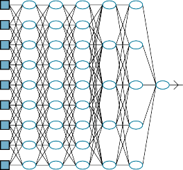
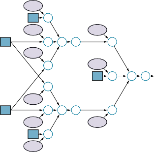
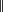
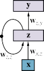
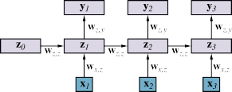
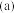
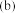
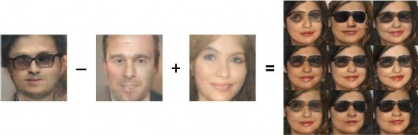

CHAPTER 22
DEEP LEARNING
In which gradient descent learns multistep programs, with significant implications for the
major subfields of artificial intelligence.
Deep learning is a broad family of techniques for machine learning in which hypotheses Deep learning
take the form of complex algebraic circuits with tunable connection strengths. The word
“deep” refers to the fact that the circuits are typically organized into many layers, which Layer
means that computation paths from inputs to outputs have many steps. Deep learning is
currently the most widely used approach for applications such as visual object recognition,
machine translation, speech recognition, speech synthesis, and image synthesis; it also plays
a significant role in reinforcement learning applications (see Chapter 23).
Deep learning has its origins in early work that tried to model networks of neurons in
the brain (McCulloch and Pitts, 1943) with computational circuits. For this reason, the net-
works trained by deep learning methods are often called neural networks, even though the Neural network
resemblance to real neural cells and structures is superficial.
While the true reasons for the success of deep learning have yet to be fully elucidated,
it has self-evident advantages over some of the methods covered in Chapter 19—particularly
for high-dimensional data such as images. For example, although methods such as linear
and logistic regression can handle a large number of input variables, the computation path
from each input to the output is very short: multiplication by a single weight, then adding
into the aggregate output. Moreover, the different input variables contribute independently to
the output, without interacting with each other (Figure 22.1(a)). This significantly limits the
expressive power of such models. They can represent only linear functions and boundaries in
the input space, whereas most real-world concepts are far more complex.
Decision lists and decision trees, on the other hand, allow for long computation paths that
can depend on many input variables—but only for a relatively small fraction of the possible
input vectors (Figure 22.1(b)). If a decision tree has long computation paths for a significant
fraction of the possible inputs, it must be exponentially large in the number of input variables.
The basic idea of deep learning is to train circuits such that the computation paths are long,
allowing all the input variables to interact in complex ways (Figure 22.1(c)). These circuit
models turn out to be sufficiently expressive to capture the complexity of real-world data for
many important kinds of learning problems.
Section 22.1 describes simple feedforward networks, their components, and the essentials
of learning in such networks. Section 22.2 goes into more detail on how deep networks
are put together, and Section 22.3 covers a class of networks called convolutional neural
networks that are especially important in vision applications. Sections 22.4 and 22.5 go
into more detail on algorithms for training networks from data and methods for improving
802 Chapter 22 Deep Learning

(b) (c)
Figure 22.1 (a) A shallow model, such as linear regression, has short computation paths
between inputs and output. (b) A decision list network (page 692) has some long paths for
some possible input values, but most paths are short. (c) A deep learning network has longer
computation paths, allowing each variable to interact with all the others.
generalization. Section 22.6 covers networks with recurrent structure, which are well suited
for sequential data. Section 22.7 describes ways to use deep learning for tasks other than
supervised learning. Finally, Section 22.8 surveys the range of applications of deep learning.
Feedforward network
Recurrent network
Unit
Simple Feedforward Networks
A feedforward network, as the name suggests, has connections only in one direction—that
is, it forms a directed acyclic graph with designated input and output nodes. Each node com-
putes a function of its inputs and passes the result to its successors in the network. Information
flows through the network from the input nodes to the output nodes, and there are no loops.
A recurrent network, on the other hand, feeds its intermediate or final outputs back into its
own inputs. This means that the signal values within the network form a dynamical system
that has internal state or memory. We will consider recurrent networks in Section 22.6.
Boolean circuits, which implement Boolean functions, are an example of feedforward
networks. In a Boolean circuit, the inputs are limited to 0 and 1, and each node implements a
simple Boolean function of its inputs, producing a 0 or a 1. In neural networks, input values
are typically continuous, and nodes take continuous inputs and produce continuous outputs.
Some of the inputs to nodes are parameters of the network; the network learns by adjusting
the values of these parameters so that the network as a whole fits the training data.
Networks as complex functions
Each node within a network is called a unit. Traditionally, following the design proposed by
McCulloch and Pitts, a unit calculates the weighted sum of the inputs from predecessor nodes
Section 22.1 Simple Feedforward Networks 803
1
0.9
0.8
0.7
0.6
0.5
0.4
0.3
0.2
0.1
0
-6 -4 -2 0 2 4 6
8
softplus
ReLU
7
6
5
4
3
2
1
0
-6 -4 -2 0 2 4 6
1
0.8
0.6
0.4
0.2
0
-0.2
-0.4
-0.6
-0.8
-1
-6 -4 -2 0 2 4 6
(a) (b) (c)
Figure 22.2 Activation functions commonly used in deep learning systems: (a) the logistic
or sigmoid function; (b) the ReLU function and the softplus function; (c) the tanh function.
and then applies a nonlinear function to produce its output. Let a j denote the output of unit j
and let wi, j be the weight attached to the link from unit i to unit j; then we have
a j = g j ∑i wi, jai ≡ g j(in j) ,
where g j is a nonlinear activation function associated with unit j and in j is the weighted Activation function
sum of the inputs to unit j.
As in Section 19.6.3 (page 697), we stipulate that each unit has an extra input from a
dummy unit 0 that is fixed to +1 and a weight w0, j for that input. This allows the total
weighted input in j to unit j to be nonzero even when the outputs of the preceding layer are
all zero. With this convention, we can write the preceding equation in vector form:
a j = g j(wTx) (22.1)
where w is the vector of weights leading into unit j (including w0, j) and x is the vector of
inputs to unit j (including the +1).
The fact that the activation function is nonlinear is important because if it were not,
any composition of units would still represent a linear function. The nonlinearity is what
allows sufficiently large networks of units to represent arbitrary functions. The universaltheorem states that a network with just two layers of computational units, the
first nonlinear and the second linear, can approximate any continuous function to an arbitrary
degree of accuracy. The proof works by showing that an exponentially large network can
represent exponentially many “bumps” of different heights at different locations in the input
space, thereby approximating the desired function. In other words, sufficiently large networks
can implement a lookup table for continuous functions, just as sufficiently large decision trees
implement a lookup table for Boolean functions.
A variety of different activation functions are used. The most common are the following:
The logistic or sigmoid function, which is also used in logistic regression (see page 703): Sigmoid
σ(x) = 1/(1 + e—x) .
The ReLU function, whose name is an abbreviation for rectified linear unit: ReLU
ReLU(x) = max(0, x) .
The softplus function, a smooth version of the ReLU function: Softplus
softplus(x) = log(1 + ex) .
804 Chapter 22 Deep Learning
w1,3
3
w3,5
w1,4
5
w2,3
w4,5
w2,4
4
x2
x1
w0,3
+1
w1,3
w3,5
x1 + g3
w2,3
w0,5
+1
+ g5
w1,4
x2
g4
w2,4 w4,5
+1
w0,4

ŷ
(a) (b)
Figure 22.3 (a) A neural network with two inputs, one hidden layer of two units, and one
output unit. Not shown are the dummy inputs and their associated weights. (b) The network
in (a) unpacked into its full computation graph.
Tanh
The derivative of the softplus function is the sigmoid function.
e2x +1
tanh(x) = e2x—1 .
Note that the range of tanh is (—1, +1). Tanh is a scaled and shifted version of the
sigmoid, as tanh(x) = 2σ(2x) — 1.
These functions are shown in Figure 22.2. Notice that all of them are monotonically nonde-
creasing, which means that their derivatives g′ are nonnegative. We will have more to say
about the choice of activation function in later sections.
Coupling multiple units together into a network creates a complex function that is a com-
position of the algebraic expressions represented by the individual units. For example, the
network shown in Figure 22.3(a) represents a function hw(x), parameterized by weights w,
that maps a two-element input vector x to a scalar output value yˆ. The internal structure of
the function mirrors the structure of the network. For example, we can write an expression
for the output yˆ as follows:
yˆ = g5(in5) = g5(w0,5 + w3,5 a3 + w4,5 a4)
= g5(w0,5 + w3,5 g3(in3) + w4,5 g4(in4))
= g5(w0,5 + w3,5 g3(w0,3 + w1,3 x1 + w2,3 x2)
+ w4,5 g4(w0,4 + w1,4 x1 + w2,4 x2)) . (22.2)
Thus, we have the output yˆ expressed as a function hw(x) of the inputs and the weights.
Section 22.1 Simple Feedforward Networks 805
Figure 22.3(a) shows the traditional way a network might be depicted in a book on neu-
ral networks. A more general way to think about the network is as a computation graph Computation graph
or dataflow graph—essentially a circuit in which each node represents an elementary com- Dataflow graph
putation. Figure 22.3(b) shows the computation graph corresponding to the network in Fig-
ure 22.3(a); the graph makes each element of the overall computation explicit. It also dis-
tinguishes between the inputs (in blue) and the weights (in light mauve): the weights can be
adjusted to make the output yˆ agree more closely with the true value y in the training data.
Each weight is like a volume control knob that determines how much the next node in the
graph hears from that particular predecessor in the graph.
Just as Equation (22.1) described the operation of a unit in vector form, we can do some-
thing similar for the network as a whole. We will generally use W to denote a weight matrix;
for this network, W(1) denotes the weights in the first layer (w1,3, w1,4, etc.) and W(2) denotes
the weights in the second layer (w3,5 etc.). Finally, let g(1) and g(2) denote the activation
functions in the first and second layers. Then the entire network can be written as follows:
hw(x) = g(2)(W(2)g(1)(W(1)x)) . (22.3)
Like Equation (22.2), this expression corresponds to a computation graph, albeit a much
simpler one than the graph in Figure 22.3(b): here, the graph is simply a chain with weight
matrices feeding into each layer.
The computation graph in Figure 22.3(b) is relatively small and shallow, but the same
idea applies to all forms of deep learning: we construct computation graphs and adjust their
weights to fit the data. The graph in Figure 22.3(b) is also fully connected, meaning that Fully connected
every node in each layer is connected to every node in the next layer. This is in some sense
the default, but we will see in Section 22.3 that choosing the connectivity of the network is
also important in achieving effective learning.
Gradients and learning
In Section 19.6, we introduced an approach to supervised learning based on gradient de-: calculate the gradient of the loss function with respect to the weights, and adjust the
weights along the gradient direction to reduce the loss. (If you have not already read Sec-
tion 19.6, we recommend strongly that you do so before continuing.) We can apply exactly
the same approach to learning the weights in computation graphs. For the weights leading
into units in the output layer—the ones that produce the output of the network, the gradient Output layer
calculation is essentially identical to the process in Section 19.6. For weights leading into
units in the hidden layers, which are not directly connected to the outputs, the process is Hidden layer
only slightly more complicated.
For now, we will use the squared loss function, L2, and we will calculate the gradient
for the network in Figure 22.3 with respect to a single training example (x, y). (For multiple
examples, the gradient is just the sum of the gradients for the individual examples.) The
network outputs a prediction yˆ= hw(x) and the true value is y, so we have


Loss(hw) = L2(y, hw(x)) = y— hw(x) 2 = (y— yˆ)2 .
To compute the gradient of the loss with respect to the weights, we need the same tools of cal-
culus we used in Chapter 19—principally the chain rule, ∂g( f (x))/∂x = g′( f (x)) ∂ f (x)/∂x.
We’ll start with the easy case: a weight such as w3,5 that is connected to the output unit. We
operate directly on the network-defining expressions from Equation (22.2):
806 Chapter 22 Deep Learning
∂ Loss(hw) = ∂ (y— yˆ)2 = —2(y— yˆ) ∂ yˆ
∂w3,5
∂w3,5
∂w3,5
5
= —2(y— yˆ) ∂ g5(in5) = —2(y— yˆ)g′ (in5) ∂ in5
∂w3,5
∂
∂w3,5
,
= —2(y— yˆ)g′5(in5) ∂w3 5 w0,5 + w3,5 a3 + w4,5 a4
= —2(y— yˆ)g′5(in5) a3 . (22.4)
The simplification in the last line follows because w0,5 and w4,5 a4 do not depend on w3,5, nor
does the coefficient of w3,5, a3.
The slightly more difficult case involves a weight such as w1,3 that is not directly con-
nected to the output unit. Here, we have to apply the chain rule one more time. The first few
steps are identical, so we omit them:
∂ ∂
∂w1 3 Loss(hw) = —2(y— yˆ)g′5(in5) ∂w1 3 w0,5 + w3,5 a3 + w4,5 a4
, ,
5 , ∂w1,3
= —2(y— yˆ)g′ (in5) w3 5 ∂ a3
5 , ∂w1,3
= —2(y— yˆ)g′ (in5) w3 5 ∂ g3(in3)
5 , 3 ∂w1,3
= —2(y— yˆ)g′ (in5) w3 5 g′ (in3) ∂ in3
— — ∂w1 3
∂
= 2(y yˆ)g′5(in5) w3,5 g′3(in3) w0,3 + w1,3 x1 + w2,3 x2
,
= —2(y— yˆ)g′5(in5) w3,5 g′3(in3) x1 . (22.5)
Back-propagation
So, we have fairly simple expressions for the gradient of the loss with respect to the weights
w3,5 and w1,3.
—
If we define ∆5 = 2(yˆ y)g′5(in5) as a sort of “perceived error” at the point where unit 5
receives its input, then the gradient with respect to w3,5 is just ∆5a3. This makes perfect sense:
if ∆5 is positive, that means yˆ is too big (recall that g′ is always nonnegative); if a3 is also
positive, then increasing w3,5 will only make things worse, whereas if a3 is negative, then
increasing w3,5 will reduce the error. The magnitude of a3 also matters: if a3 is small for this
training example, then w3,5 didn’t play a major role in producing the error and doesn’t need
to be changed much.
If we also define ∆3 =∆5 w3,5 g′3(in3), then the gradient for w1,3 becomes just ∆3 x1. Thus,
the perceived error at the input to unit 3 is the perceived error at the input to unit 5, multiplied
by information along the path from 5 back to 3. This phenomenon is completely general, and
gives rise to the term back-propagation for the way that the error at the output is passed back
through the network.
Another important characteristic of these gradient expressions is that they have as factors
the local derivatives g′j (in j). As noted earlier, these derivatives are always nonnegative, but
they can be very close to zero (in the case of the sigmoid, softplus, and tanh functions)
or exactly zero (in the case of ReLUs), if the inputs from the training example in question
Section 22.2 Computation Graphs for Deep Learning 807
happen to put unit j in the flat operating region. If the derivative g′j is small or zero, that
means that changing the weights leading into unit j will have a negligible effect on its output.
As a result, deep networks with many layers may suffer from a vanishing gradient—the Vanishing gradient
error signals are extinguished altogether as they are propagated back through the network.
Section 22.3.3 provides one solution to this problem.
We have shown that gradients in our tiny example network are simple expressions that
can be computed by passing information back through the network from the output units.
It turns out that this property holds more generally. In fact, as we show in Section 22.4.1,
the gradient computations for any feedforward computation graph have the same structure as
the underlying computation graph. This property follows straightforwardly from the rules of
differentiation.
We have shown the gory details of a gradient calculation, but worry not: there is no need
to redo the derivations in Equations (22.4) and (22.5) for each new network structure! All such
gradients can be computed by the method of automatic differentiation, which applies the Automatic
rules of calculus in a systematic way to calculate gradients for any numeric program.1 In fact,
differentiation
the method of back-propagation in deep learning is simply an application of reverse mode Reverse mode
differentiation, which applies the chain rule “from the outside in” and gains the efficiency
advantages of dynamic programming when the network in question has many inputs and
relatively few outputs.
All of the major packages for deep learning provide automatic differentiation, so that
users can experiment freely with different network structures, activation functions, loss func-
tions, and forms of composition without having to do lots of calculus to derive a new learning
algorithm for each experiment. This has encouraged an approach called end-to-end learn-
ing, in which a complex computational system for a task such as machine translation can be End-to-end learning
composed from several trainable subsystems; the entire system is then trained in an end-to-
end fashion from input/output pairs. With this approach, the designer need have only a vague
idea about how the overall system should be structured; there is no need to know in advance
exactly what each subsystem should do or how to label its inputs and outputs.
Computation Graphs for Deep Learning
We have established the basic ideas of deep learning: represent hypotheses as computation
graphs with tunable weights and compute the gradient of the loss function with respect to
those weights in order to fit the training data. Now we look at how to put together computation
graphs. We begin with the input layer, which is where the training or test example x is
encoded as values of the input nodes. Then we consider the output layer, where the outputs yˆ
are compared with the true values y to derive a learning signal for tuning the weights. Finally,
we look at the hidden layers of the network.
Input encoding
The input and output nodes of a computational graph are the ones that connect directly to the
input data x and the output data y. The encoding of input data is usually straightforward, at
least for the case of factored data where each training example contains values for n input
1 Automatic differentiation methods were originally developed in the 1960s and 1970s for optimizing the pa-
rameters of systems defined by large, complex Fortran programs.
808 Chapter 22 Deep Learning
—
attributes. If the attributes are Boolean, we have n input nodes; usually false is mapped to
an input of 0 and true is mapped to 1, although sometimes 1 and +1 are used. Numeric
attributes, whether integer or real-valued, are typically used as is, although they may be scaled
to fit within a fixed range; if the magnitudes for different examples vary enormously, the
values can be mapped onto a log scale.
Images do not quite fit into the category of factored data; although an RGB image of size
{ }
×
X Y pixels can be thought of as 3XY integer-valued attributes (typically with values in the
range 0, . . . , 255 ), this would ignore the fact that the RGB triplets belong to the same pixel
in the image and the fact that pixel adjacency really matters. Of course, we can map adjacent
pixels onto adjacent input nodes in the network, but the meaning of adjacency is completely
lost if the internal layers of the network are fully connected. In practice, networks used with
image data have array-like internal structures that aim to reflect the semantics of adjacency.
We will see this in more detail in Section 22.3.
Categorical attributes with more than two values—like the Type attribute in the restaurant
problem from Chapter 19, which has values French, Italian, Thai, or burger)—are usually
encoded using the so-called one-hot encoding. An attribute with d possible values is repre-
sented by d separate input bits. For any given value, the corresponding input bit is set to 1 and
all the others are set to 0. This generally works better than mapping the values to integers.
If we used integers for the Type attribute, Thai would be 3 and burger would be 4. Because
the network is a composition of continuous functions, it would have no choice but to pay
attention to numerical adjacency, but in this case the numerical adjacency between Thai and
burger is semantically meaningless.
Output layers and loss functions
{ }
On the output side of the network, the problem of encoding the raw data values into actual
values y for the output nodes of the graph is much the same as the input encoding problem.
For example, if the network is trying to predict the Weather variable from Chapter 12, which
has values sun, rain, cloud, snow , we would use a one-hot encoding with four bits.
So much for the data values y. What about the prediction yˆ? Ideally, it would exactly
match the desired value y, and the loss would be zero, and we’d be done. In practice, this
seldom happens—especially before we have started the process of adjusting the weights!
Thus, we need to think about what an incorrect output value means, and how to measure the
loss. In deriving the gradients in Equations (22.4) and (22.5), we began with the squared-
error loss function. This keeps the algebra simple, but it is not the only possibility. In fact,
for most deep learning applications, it is more common to interpret the output values yˆ as
probabilities and to use the negative log likelihood as the loss function—exactly as we did
with maximum likelihood learning in Chapter 21.
Maximum likelihood learning finds the value of w that maximizes the probability of the
observed data. And because the log function is monotonic, this is equivalent to maximizing
the log likelihood of the data, which is equivalent in turn to minimizing a loss function defined
as the negative log likelihood. (Recall from page 776 that taking logs turns products of
probabilities into sums, which are more amenable for taking derivatives.) In other words, we
are looking for w∗ that minimizes the sum of negative log probabilities of the N examples:
N
w∗ = argmin — ∑ log Pw(y j | x j) . (22.6)
w j = 1
Section 22.2 Computation Graphs for Deep Learning 809
In the deep learning literature, it is common to talk about minimizing the cross-entropy Cross-entropy
loss. Cross-entropy, written as H(P, Q), is a kind of measure of dissimilarity between two
distributions P and Q.2 The general definition is
H(P, Q) = Ez∼P(z)[log Q(z)] = ∫ P(z) log Q(z)dz . (22.7)
|
In machine learning, we typically use this definition with P being the true distribution over
training examples, P∗(x, y), and Q being the predictive hypothesis Pw(y | x). Minimizing the
cross-entropy H(P∗(x, y), Pw(y x)) by adjusting w makes the hypothesis agree as closely as
possible with the true distribution. In reality, we cannot minimize this cross-entropy because
we do not have access to the true data distribution P∗(x, y); but we do have access to samples
from P∗(x, y), so the sum over the actual data in Equation (22.6) approximates the expectation
in Equation (22.7).
To minimize the negative log likelihood (or the cross-entropy), we need to be able to
interpret the output of the network as a probability. For example, if the network has one
output unit with a sigmoid activation function and is learning a Boolean classification, we can
interpret the output value directly as the probability that the example belongs to the positive
class. (Indeed, this is exactly how logistic regression is used; see page 702.) Thus, for
Boolean classification problems, we commonly use a sigmoid output layer.
Multiclass classification problems are very common in machine learning. For example,
classifiers used for object recognition often need to recognize thousands of distinct categories
of objects. Natural language models that try to predict the next word in a sentence may have
to choose among tens of thousands of possible words. For this kind of prediction, we need
the network to output a categorical distribution—that is, if there are d possible answers, we
need d output nodes that represent probabilities summing to 1.
To achieve this, we use a softmax layer, which outputs a vector of d values given a vector Softmax
of input values in = ⟨in1, , ind⟩. The kth element of that output vector is given by
softmax(in)k =
eink
d eink′ .
∑k′ = 1
By construction, the softmax function outputs a vector of nonnegative numbers that sum to 1.
⟨ ⟩
⟨ — ⟩
As usual, the input ink to each of the output nodes will be a weighted linear combination of
the outputs of the preceding layer. Because of the exponentials, the softmax layer accentuates
differences in the inputs: for example, if the vector of inputs is given by in = 5, 2, 0, 2 , then
the outputs are 0.946, 0.047, 0.006, 0.001 . The softmax, is, nonetheless, smooth and differ-
entiable (Exercise 22.SOFG), unlike the max function. It is easy to show (Exercise 22.SMSG)
that the sigmoid is a softmax with d = 2. In other words, just as sigmoid units propagate
binary class information through a network, softmax units propagate multiclass information.
For a regression problem, where the target value y is continuous, it is common to use a
linear output layer—in other words, yˆj = in j, without any activation function g—and to inter-
pret this as the mean of a Gaussian prediction with fixed variance. As we noted on page 780,
maximizing likelihood (i.e., minimizing negative log likelihood) with a fixed-variance Gaus-
sian is the same as minimizing squared error. Thus, a linear output layer interpreted in this
2 Cross-entropy is not a distance in the usual sense because H(P, P) is not zero; rather, it equals the entropy


H(P). It is easy to show that H(P, Q) = H(P) + DKL(P Q), where DKL is the Kullback–Leibler divergence,
which does satisfy DKL(P P) = 0. Thus, for fixed P, varying Q to minimize the cross-entropy also minimizes the
KL divergence.
810 Chapter 22 Deep Learning
Mixture density
way does classical linear regression. The input features to this linear regression are the out-
puts from the preceding layer, which typically result from multiple nonlinear transformations
of the original inputs to the network.
Many other output layers are possible. For example, a mixture density layer represents
the outputs using a mixture of Gaussian distributions. (See Section 21.3.1 for more details on
Gaussian mixtures.) Such layers predict the relative frequency of each mixture component,
the mean of each component, and the variance of each component. As long as these output
values are interpreted appropriately by the loss function as defining the probability for the
true output value y, the network will, after training, fit a Gaussian mixture model in the space
of features defined by the preceding layers.
Hidden layers
During the training process, a neural network is shown many input values x and many corre-
sponding output values y. While processing an input vector x, the neural network performs
several intermediate computations before producing the output y. We can think of the values
computed at each layer of the network as a different representation for the input x. Each
layer transforms the representation produced by the preceding layer to produce a new rep-
resentation. The composition of all these transformations succeeds—if all goes well—in
transforming the input into the desired output. Indeed, one hypothesis for why deep learning
works well is that the complex end-to-end transformation that maps from input to output—
say, from an input image to the output category “giraffe”—is decomposed by the many layers
into the composition of many relatively simple transformations, each of which is fairly easy
to learn by a local updating process.
In the process of forming all these internal transformations, deep networks often discover
meaningful intermediate representations of the data. For example, a network learning to
recognize complex objects in images may form internal layers that detect useful subunits:
edges, corners, ellipses, eyes, faces—cats. Or it may not—deep networks may form internal
layers whose meaning is opaque to humans, even though the output is still correct.
The hidden layers of neural networks are typically less diverse than the output layers.
For the first 25 years of research with multilayer networks (roughly 1985–2010), internal
nodes used sigmoid and tanh activation functions almost exclusively. From around 2010
onwards, the ReLU and softplus become more popular, partly because they are believed to
avoid the problem of vanishing gradients mentioned in Section 22.1.2. Experimentation with
increasingly deep networks suggested that, in many cases, better learning was obtained with
deep and relatively narrow networks rather than shallow, wide networks, given a fixed total
number of weights. A typical example of this is shown in Figure 22.7 on page 820.
There are, of course, many other structures to consider for computation graphs, besides
just playing with width and depth. At the time of writing, there is little understanding as
to why some structures seem to work better than others for some particular problem. With
experience, practitioners gain some intuition as to how to design networks and how to fix
them when they don’t work, just as chefs gain intuition for how to design recipes and how
to fix them when they taste unpleasant. For this reason, tools that facilitate rapid exploration
and evaluation of different structures are essential for success in real-world problems.
Section 22.3 Convolutional Networks 811
Convolutional Networks
We mentioned in Section 22.2.1 that an image cannot be thought of as a simple vector of in-
put pixel values, primarily because adjacency of pixels really matters. If we were to construct
a network with fully connected layers and an image as input, we would get the same result
whether we trained with unperturbed images or with images all of whose pixels had been ran-
domly permuted. Furthermore, suppose there are n pixels and n units in the first hidden layer,
to which the pixels provide input. If the input and the first hidden layer are fully connected,
that means n2 weights; for a typical megapixel RGB image, that’s 9 trillion weights. Such a
vast parameter space would require correspondingly vast numbers of training images and a
huge computational budget to run the training algorithm.
These considerations suggest that we should construct the first hidden layer so that each K
hidden unit receives input from only a small, local region of the image. This kills two birds
with one stone. First, it respects adjacency, at least locally. (And we will see later that if
subsequent layers have the same locality property, then the network will respect adjacency in
a global sense.) Second, it cuts down the number of weights: if each local region has l npixels, then there will be ln n2 weights in all.
So far, so good. But we are missing another important property of images: roughly
speaking, anything that is detectable in one small, local region of the image—perhaps an eye
or a blade of grass—would look the same if it appeared in another small, local region of the
image. In other words, we expect image data to exhibit approximate spatial invariance, at Spatial invariance
least at small to moderate scales.3 We don’t necessarily expect the top halves of photos to
look like bottom halves, so there is a scale beyond which spatial invariance no longer holds.
Local spatial invariance can be achieved by constraining the l weights connecting a local
region to a unit in the hidden layer to be the same for each hidden unit. (That is, for hidden
units i and j, the weights w1,i, . . . , wl,i are the same as w1, j, . . . , wl, j.) This makes the hidden
units into feature detectors that detect the same feature wherever it appear in the image.
Typically, we want the first hidden layer to detect many kinds of features, not just one; so
for each local image region we might have d hidden units with d distinct sets of weights.
This means that there are dl weights in all—a number that is not only far smaller than n2,
but is actually independent of n, the image size. Thus, by injecting some prior knowledge—
namely, knowledge of adjacency and spatial invariance—we can develop models that have
far fewer parameters and can learn much more quickly.
network (CNN)
A convolutional neural network (CNN) is one that contains spatially local connections, Convolutional neural
at least in the early layers, and has patterns of weights that are replicated across the units
in each layer. A pattern of weights that is replicated across multiple local regions is called
a kernel and the process of applying the kernel to the pixels of the image (or to spatially Kernel
organized units in a subsequent layer) is called convolution.4 Convolution
Kernels and convolutions are easiest to illustrate in one dimension rather than two or
more, so we will assume an input vector x of size n, corresponding to n pixels in a one-
3 Similar ideas can be applied to process time-series data sources such as audio waveforms. These typically
exhibit temporal invariance—a word sounds the same no matter what time of day it is uttered. Recurrent neural
networks (Section 22.6) automatically exhibit temporal invariance.
4 In the terminology of signal processing, we would call this operation a cross-correlation, not a convolution.
But “convolution” is used within the field of neural networks.
812 Chapter 22 Deep Learning
5 9 4
+1
+1 +1
+1 +1
+1
5
–1
6
6
–1
2
5
–1
6
5
Figure 22.4 An example of a one-dimensional convolution operation with a kernel of size
l = 3 and a stride s = 2. The peak response is centered on the darker (lower intensity) input
pixel. The results would usually be fed through a nonlinear activation function (not shown)
before going to the next hidden layer.
Stride
dimensional image, and a vector kernel k of size l. (For simplicity we will assume that l is an
odd number.) All the ideas carry over straightforwardly to higher-dimensional cases.
∗ ∗
We write the convolution operation using the symbol, for example: z = x k. The
operation is defined as follows:
l
—
zi = ∑ k jx j+i (l+1)/2 . (22.8)
j = 1
In other words, for each output position i, we take the dot product between the kernel k and a
snippet of x centered on xi with width l.
—
[ ♩
The process is illustrated in Figure 22.4 for a kernel vector [+1, 1, +1], which detects
a darker point in the 1D image. (The 2D version might detect a darker line.) Notice that in
this example the pixels on which the kernels are centered are separated by a distance of 2
pixels; we say the kernel is applied with a stride s = 2. Notice that the output layer has fewer
pixels: because of the stride, the number of pixels is reduced from n to roughly n/s. (In two
dimensions, the number of pixels would be roughly n/sxsy, where sx and sy are the strides in
the x and y directions in the image.) We say “roughly” because of what happens at the edge
of the image: in Figure 22.4 the convolution stops at the edges of the image, but one can also
pad the input with extra pixels (either zeroes or copies of the outer pixels) so that the kernel
can be applied exactly n/s times. For small kernels, we typically use s = 1, so the output
has the same dimensions as the image (see Figure 22.5).
!
The operation of applying a kernel across an image can be implemented in the obvious
way by a program with suitable nested loops; but it can also be formulated as a single matrix
operation, just like the application of the weight matrix in Equation (22.1). For example, the
convolution illustrated in Figure 22.4 can be viewed as the following matrix multiplication:
+1 —1 +1 0 0 0 0
0 0 +1 —1 +1 0 0
0 0 0 0 +1 —1 +1
! 5
5
6 =
2
6
6
5
5
9 . (22.9)
4
In this weight matrix, the kernel appears in each row, shifted according to the stride relative
to the previous row, One wouldn’t necessarily construct the weight matrix explicitly—it is
Section 22.3 Convolutional Networks 813
Figure 22.5 The first two layers of a CNN for a 1D image with a kernel size l = 3 and a
stride s = 1. Padding is added at the left and right ends in order to keep the hidden layers the
same size as the input. Shown in red is the receptive field of a unit in the second hidden layer.
Generally speaking, the deeper the unit, the larger the receptive field.
mostly zeroes, after all—but the fact that convolution is a linear matrix operation serves as a
reminder that gradient descent can be applied easily and effectively to CNNs, just as it can to
plain vanilla neural networks.
As mentioned earlier, there will be d kernels, not just one; so, with a stride of 1, the
output will be d times larger. This means that a two-dimensional input array becomes a
three-dimensional array of hidden units, where the third dimension is of size d. It is im-
portant to organize the hidden layer this way, so that all the kernel outputs from a particular
image location stay associated with that location. Unlike the spatial dimensions of the image,
however, this additional “kernel dimension” does not have any adjacency properties, so it
does not make sense to run convolutions along it.
CNNs were inspired originally by models of the visual cortex proposed in neuroscience.
In those models, the receptive field of a neuron is the portion of the sensory input that can Receptive field
—
—
affect that neuron’s activation. In a CNN, the receptive field of a unit in the first hidden layer
is small—just the size of the kernel, i.e., l pixels. In the deeper layers of the network, it
can be much larger. Figure 22.5 illustrates this for a unit in the second hidden layer, whose
receptive field contains five pixels. When the stride is 1, as in the figure, a node in the mth
hidden layer will have a receptive field of size (l 1)m + 1; so the growth is linear in m. (In
a 2D image, each dimension of the receptive field grows linearly with m, so the area grows
quadratically.) When the stride is larger than 1, each pixel in layer m represents s pixels in
layer m 1; therefore, the receptive field grows as O(lsm)—that is, exponentially with depth.
The same effect occurs with pooling layers, which we discuss next.
Pooling and downsampling
A pooling layer in a neural network summarizes a set of adjacent units from the preceding Pooling
layer with a single value. Pooling works just like a convolution layer, with a kernel size l and
stride s, but the operation that is applied is fixed rather than learned. Typically, no activation
function is associated with the pooling layer. There are two common forms of pooling:
Average-pooling computes the average value of its l inputs. This is identical to con-
volution with a uniform kernel vector k =[1/l,..., 1/l]. If we set l = s, the effect is to
coarsen the resolution of the image—to downsample it—by a factor of s. An object Downsampling
that occupied, say, 10s pixels would now occupy only 10 pixels after pooling. The same
814 Chapter 22 Deep Learning
Tensor
learned classifier that would be able to recognize the object at a size of 10 pixels in the
original image would now be able to recognize that object in the pooled image, even
if it was too big to recognize in the original image. In other words, average-pooling
facilitates multiscale recognition. It also reduces the number of weights required in
subsequent layers, leading to lower computational cost and possibly faster learning.
Max-pooling computes the maximum value of its l inputs. It can also be used purely
for downsampling, but it has a somewhat different semantics. Suppose we applied max-
pooling to the hidden layer [5, 9, 4] in Figure 22.4: the result would be a 9, indicating
that somewhere in the input image there is a darker dot that is detected by the kernel.
In other words, max-pooling acts as a kind of logical disjunction, saying that a feature
exists somewhere in the unit’s receptive field.
If the goal is to classify the image into one of c categories, then the final layer of the network
will be a softmax with c output units. The early layers of the CNN are image-sized, so
somewhere in between there must be significant reductions in layer size. Convolution layers
and pooling layers with stride larger than 1 all serve to reduce the layer size. It’s also possible
to reduce the layer size simply by having a fully connected layer with fewer units than the
preceding layer. CNNs often have one or two such layers preceding the final softmax layer.
Tensor operations in CNNs
We saw in Equations (22.1) and (22.3) that the use of vector and matrix notation can be helpful
in keeping mathematical derivations simple and elegant and providing concise descriptions of
computation graphs. Vectors and matrices are one-dimensional and two-dimensional special
cases of tensors, which (in deep learning terminology) are simply multidimensional arrays
of any dimension.5
For CNNs, tensors are a way of keeping track of the “shape” of the data as it progresses
through the layers of the network. This is important because the whole notion of convolution
depends on the idea of adjacency: adjacent data elements are assumed to be semantically
related, so it makes sense to apply operators to local regions of the data. Moreover, with
suitable language primitives for constructing tensors and applying operators, the layers them-
selves can be described concisely as maps from tensor inputs to tensor outputs.
A final reason for describing CNNs in terms of tensor operations is computational effi-
ciency: given a description of a network as a sequence of tensor operations, a deep learning
software package can generate compiled code that is highly optimized for the underlying
computational substrate. Deep learning workloads are often run on GPUs (graphics process-
ing units) or TPUs (tensor processing units), which make available a high degree of paral-
lelism. For example, one of Google’s third-generation TPU pods has throughput equivalent
to about ten million laptops. Taking advantage of these capabilities is essential if one is train-
ing a large CNN on a large database of images. Thus, it is common to process not one image
at a time but many images in parallel; as we will see in Section 22.4, this also aligns nicely
with the way that the stochastic gradient descent algorithm calculates gradients with respect
to a minibatch of training examples.
Let us put all this together in the form of an example. Suppose we are training on
256 × 256 RGB images with a minibatch size of 64. The input in this case will be a four-
5 The proper mathematical definition of tensors requires that certain invariances hold under a change of basis.
Section 22.3 Convolutional Networks 815
× × × × ×
dimensional tensor of size 256 256 3 64. Then we apply 96 kernels of size 5 5 3
with a stride of 2 in both x and y directions in the image. This gives an output tensor of size
× × ×
128 128 96 64. Such a tensor is often called a feature map, since it shows how each Feature map
feature extracted by a kernel appears across the entire image; in this case it is composed of
96 channels, where each channel carries information from one feature. Notice that unlike the Channel
input tensor, this feature map no longer has dedicated color channels; nonetheless, the color
information may still be present in the various feature channels if the learning algorithm finds
color to be useful for the final predictions of the network.
Residual networks
Residual networks are a popular and successful approach to building very deep networks Residual network
that avoid the problem of vanishing gradients.
—
Typical deep models use layers that learn a new representation at layer i by completely re-
placing the representation at layer i 1. Using the matrix–vector notation that we introduced
in Equation (22.3), with z(i) being the values of the units in layer i, we have
z(i) = f (z(i—1)) = g(i)(W(i)z(i—1)) .
— —
Because each layer completely replaces the representation from the preceding layer, all of
the layers must learn to do something useful. Each layer must, at the very least, preserve the
task-relevant information contained in the preceding layer. If we set W(i) = 0 for any layer i,
the entire network ceases to function. If we also set W(i—1) = 0, the network would not even
be able to learn: layer i would not learn because it would observe no variation in its input
from layer i 1, and layer i 1 would not learn because the back-propagated gradient from
layer i would always be zero. Of course, these are extreme examples, but they illustrate the
need for layers to serve as conduits for the signals passing through the network.
The key idea of residual networks is that a layer should perturb the representation from
the previous layer rather than replace it entirely. If the learned perturbation is small, the next
layer is close to being a copy of the previous layer. This is achieved by the following equation
for layer i in terms of layer i— 1:
r
z(i) = g(i)(z(i—1) + f (z(i—1))) , (22.10)
—
where gr denotes the activation functions for the residual layer. Here we think of f as the
residual, perturbing the default behavior of passing layer i 1 through to layer i. The function Residual
used to compute the residual is typically a neural network with one nonlinear layer combined
with one linear layer:
f (z) = Vg(Wz) ,
where W and V are learned weight matrices with the usual bias weights added.
Residual networks make it possible to learn significantly deeper networks reliably. Con-
sider what happens if we set V = 0 for a particular layer in order to disable that layer. Then
the residual f disappears and Equation (22.10) simplifies to
z(i) = gr(z(i—1)) .
Now suppose that gr consists of ReLU activation functions and that z(i—1) also applies a ReLU
function to its inputs: z(i—1) =ReLU(in(i—1)). In that case we have
z(i) = gr(z(i—1)) = ReLU(z(i—1)) = ReLU(ReLU(in(i—1))) = ReLU(in(i—1)) = z(i—1) ,
816 Chapter 22 Deep Learning
where the penultimate step follows because ReLU(ReLU(x)) =ReLU(x). In other words,
in residual nets with ReLU activations, a layer with zero weights simply passes its inputs
through with no change. The rest of the network functions just as if the layer had never
existed. Whereas traditional networks must learn to propagate information and are subject
to catastrophic failure of information propagation for bad choices of the parameters, residual
networks propagate information by default.
Residual networks are often used with convolutional layers in vision applications, but
they are in fact a general-purpose tool that makes deep networks more robust and allows
researchers to experiment more freely with complex and heterogeneous network designs. At
the time of writing, it is not uncommon to see residual networks with hundreds of layers.
The design of such networks is evolving rapidly, so any additional specifics we might provide
would probably be outdated before reaching printed form. Readers desiring to know the best
architectures for specific applications should consult recent research publications.
Learning Algorithms
Training a neural network consists of modifying the network’s parameters so as to minimize
the loss function on the training set. In principle, any kind of optimization algorithm could
be used. In practice, modern neural networks are almost always trained with some variant of
stochastic gradient descent (SGD).
We covered standard gradient descent and its stochastic version in Section 19.6.2. Here,
the goal is to minimize the loss L(w), where w represents all of the parameters of the network.
Each update step in the gradient descent process looks like this:
w ← w — α∇wL(w) ,
where α is the learning rate. For standard gradient descent, the loss L is defined with respect
to the entire training set. For SGD, it is defined with respect to a minibatch of m examples
chosen randomly at each step.
As noted in Section 4.2, the literature on optimization methods for high-dimensional
continuous spaces includes innumerable enhancements to basic gradient descent. We will
not cover all of them here, but it is worth mentioning a few important considerations that are
particularly relevant to training neural networks:
For most networks that solve real-world problems, both the dimensionality of w and the
size of the training set are very large. These considerations militate strongly in favor
of using SGD with a relatively small minibatch size m: stochasticity helps the algo-
rithm escape small local minima in the high-dimensional weight space (as in simulated
annealing—see page 132); and the small minibatch size ensures that the computational
cost of each weight update step is a small constant, independent of the training set size.
Because the gradient contribution of each training example in the SGD minibatch can
be computed independently, the minibatch size is often chosen so as to take maximum
advantage of hardware parallelism in GPUs or TPUs.
To improve convergence, it is usually a good idea to use a learning rate that decreases
over time. Choosing the right schedule is usually a matter of trial and error.
Near a local or global minimum of the loss function with respect to the entire training
set, the gradients estimated from small minibatches will often have high variance and
Section 22.4 Learning Algorithms 817
f
j
∂L/∂fh
∂L/∂hj
h
∂L/∂gh
∂L/∂hk
g
k
Figure 22.6 Illustration of the back-propagation of gradient information in an arbitrary com-
putation graph. The forward computation of the output of the network proceeds from left to
right, while the back-propagation of gradients proceeds from right to left.
may point in entirely the wrong direction, making convergence difficult. One solution
is to increase the minibatch size as training proceeds; another is to incorporate the idea
of momentum, which keeps a running average of the gradients of past minibatches in Momentum
order to compensate for small minibatch sizes.
Care must be taken to mitigate numerical instabilities that may arise due to overflow,
underflow, and rounding error. These are particularly problematic with the use of ex-
ponentials in softmax, sigmoid, and tanh activation functions, and with the iterated
computations in very deep networks and recurrent networks (Section 22.6) that lead to
vanishing and exploding activations and gradients.
Overall, the process of learning the weights of the network is usually one that exhibits di-
minishing returns. We run until it is no longer practical to decrease the test error by running
longer. Usually this does not mean we have reached a global or even a local minimum of
the loss function. Instead, it means we would have to make an impractically large number
of very small steps to continue reducing the cost, or that additional steps would only cause
overfitting, or that estimates of the gradient are too inaccurate to make further progress.
Computing gradients in computation graphs
On page 806, we derived the gradient of the loss function with respect to the weights in a
specific (and very simple) network. We observed that the gradient could be computed by
back-propagating error information from the output layer of the network to the hidden layers.
We also said that this result holds in general for any feedforward computation graph. Here,
we explain how this works.
Figure 22.6 shows a generic node in a computation graph. (The node h has in-degree and
out-degree 2, but nothing in the analysis depends on this.) During the forward pass, the node
computes some arbitrary function h from its inputs, which come from nodes f and g. In turn,
h feeds its value to nodes j and k.
The back-propagation process passes messages back along each link in the network. At
each node, the incoming messages are collected and new messages are calculated to pass
818 Chapter 22 Deep Learning
back to the next layer. As the figure shows, the messages are all partial derivatives of the loss
L. For example, the backward message ∂L/∂hj is the partial derivative of L with respect to
j’s first input, which is the forward message from h to j. Now, h affects L through both j and
k, so we have
∂L/∂h = ∂L/∂hj + ∂L/∂hk . (22.11)
With this equation, the node h can compute the derivative of L with respect to h by summing
the incoming messages from j and k. Now, to compute the outgoing messages ∂L/∂ fh and
∂L/∂gh, we use the following equations:
∂L ∂L ∂h ∂L ∂L ∂h
∂ fh = ∂h ∂ fh and
∂gh = ∂h ∂gh . (22.12)
In Equation (22.12), ∂L/∂h was already computed by Equation (22.11), and ∂h/∂ fh and
·
∂h/∂gh are just the derivatives of h with respect to its first and second arguments, respec-
tively. For example, if h is a multiplication node—that is, h( f , g) = f g—then ∂h/∂ fh = g
and ∂h/∂gh = f . Software packages for deep learning typically come with a library of node
types (addition, multiplication, sigmoid, and so on), each of which knows how to compute its
own derivatives as needed for Equation (22.12).
The back-propagation process begins with the output nodes, where each initial message
∂L/∂ yˆj is calculated directly from the expression for L in terms of the predicted value yˆ
and the true value y from the training data. At each internal node, the incoming backward
messages are summed according to Equation (22.11) and the outgoing messages are generated
from Equation (22.12). The process terminates at each node in the computation graph that
represents a weight w (e.g., the light mauve ovals in Figure 22.3(b)). At that point, the
sum of the incoming messages to w is ∂L/∂w—precisely the gradient we need to update w.
Exercise 22.BPRE asks you to apply this process to the simple network in Figure 22.3 in order
to rederive the gradient expressions in Equations (22.4) and (22.5).
Weight-sharing, as used in convolutional networks (Section 22.3) and recurrent networks
(Section 22.6), is handled simply by treating each shared weight as a single node with multiple
outgoing arcs in the computation graph. During back-propagation, this results in multiple
incoming gradient messages. By Equation (22.11), this means that the gradient for the shared
weight is the sum of the gradient contributions from each place it is used in the network.
It is clear from this description of the back-propagation process that its computational
cost is linear in the number of nodes in the computation graph, just like the cost of the for-
ward computation. Furthermore, because the node types are typically fixed when the network
is designed, all of the gradient computations can be prepared in symbolic form in advance
and compiled into very efficient code for each node in the graph. Note also that the mes-
sages in Figure 22.6 need not be scalars: they could equally be vectors, matrices, or higher-
dimensional tensors, so that the gradient computations can be mapped onto GPUs or TPUs to
benefit from parallelism.
One drawback of back-propagation is that it requires storing most of the intermediate
values that were computed during forward propagation in order to calculate gradients in the
backward pass. This means that the total memory cost of training the network is proportional
to the number of units in the entire network. Thus, even if the network itself is represented
only implicitly by propagation code with lots of loops, rather than explicitly by a data struc-
ture, all of the intermediate results of that propagation code have to be stored explicitly.
Section 22.5 Generalization 819
Batch normalization
Batch normalization is a commonly used technique that improves the rate of convergence of Batch normalization
SGD by rescaling the values generated at the internal layers of the network from the examples
within each minibatch. Although the reasons for its effectiveness are not well understood at
the time of writing, we include it because it confers significant benefits in practice. To some
extent, batch normalization seems to have effects similar to those of the residual network.
Consider a node z somewhere in the network: the values of z for the m examples in a
minibatch are z1, , zm. Batch normalization replaces each zi with a new quantity zˆi:
i —
√ 2
z µzˆi = γ + β ,
ϵ + σ
where µ is the mean value of z across the minibatch, σ is the standard deviation of z1, , zm,
ϵ is a small constant added to prevent division by zero, and γ and β are learned parameters.
Batch normalization standardizes the mean and variance of the values, as determined by
the values of β and γ. This makes it much simpler to train a deep network. Without batch
normalization, information can get lost if a layer’s weights are too small, and the standard
deviation at that layer decays to near zero. Batch normalization prevents this from happening.
It also reduces the need for careful initialization of all the weights in the network to make sure
that the nodes in each layer are in the right operating region to allow information to propagate.
With batch normalization, we usually include β and γ, which may be node-specific or
layer-specific, among the parameters of the network, so that they are included in the learning
process. After training, β and γ are fixed at their learned values.
Generalization
So far we have described how to fit a neural network to its training set, but in machine learn-
ing the goal is to generalize to new data that has not been seen previously, as measured by
performance on a test set. In this section, we focus on three approaches to improving gener-
alization performance: choosing the right network architecture, penalizing large weights, and
randomly perturbing the values passing through the network during training.
Choosing a network architecture
A great deal of effort in deep learning research has gone into finding network architectures
that generalize well. Indeed, for each particular kind of data—images, speech, text, video,
and so on—a good deal of the progress in performance has come from exploring different
kinds of network architectures and varying the number of layers, their connectivity, and the
types of node in each layer.6
Some neural network architectures are explicitly designed to generalize well on particular
types of data: convolutional networks encode the idea that the same feature extractor is useful
at all locations across a spatial grid, and recurrent networks encode the idea that the same
update rule is useful at all points in a stream of sequential data. To the extent that these
assumptions are valid, we expect convolutional architectures to generalize well on images
and recurrent networks to generalize well on text and audio signals.
6 Noting that much of this incremental, exploratory work is carried out by graduate students, some have called
the process graduate student descent (GSD).
820 Chapter 22 Deep Learning
3-layer
11-layer
0.1
0.08
Test-set error
0.06
0.04
0.02
0
0 1 2 3 4 5 6 7
Number of weights ( 107)
Figure 22.7 Test-set error as a function of layer width (as measured by total number of
weights) for three-layer and eleven-layer convolutional networks. The data come from early
versions of Google’s system for transcribing addresses in photos taken by Street View cars
(Goodfellow et al., 2014).
One of the most important empirical findings in the field of deep learning is that when
comparing two networks with similar numbers of weights, the deeper network usually gives
better generalization performance. Figure 22.7 shows this effect for at least one real-world
application—recognizing house numbers. The results show that for any fixed number of pa-
rameters, an eleven-layer network gives much lower test-set error than a three-layer network.
Deep learning systems perform well on some but not all tasks. For tasks with high-
dimensional inputs—images, video, speech signals, etc.—they perform better than any other
pure machine learning approaches. Most of the algorithms described in Chapter 19 can handle
high-dimensional input only if it is preprocessed using manually designed features to reduce
the dimensionality. This preprocessing approach, which prevailed prior to 2010, has not
yielded performance comparable to that achieved by deep learning systems.
Clearly, deep learning models are capturing some important aspects of these tasks. In par-
ticular, their success implies that the tasks can be solved by parallel programs with a relatively
small number of steps (10 to 103 rather than, say, 107). This is perhaps not surprising, be-
cause these tasks are typically solved by the brain in less than a second, which is time enough
for only a few tens of sequential neuron firings. Moreover, by examining the internal-layer
representations learned by deep convolutional networks for vision tasks, we find evidence
that the processing steps seem to involve extracting a sequence of increasingly abstract repre-
sentations of the scene, beginning with tiny edges, dots, and corner features and ending with
entire objects and arrangements of multiple objects.
On the other hand, because they are simple circuits, deep learning models lack the com-
positional and quantificational expressive power that we see in first-order logic (Chapter 8)
and context-free grammars (Chapter 24).
Although deep learning models generalize well in many cases, they may also produce
unintuitive errors. They tend to produce input–output mappings that are discontinuous, so
that a small change to an input can cause a large change in the output. For example, it may
Section 22.5 Generalization 821
be possible to alter just a few pixels in an image of a dog and cause the network to classify
the dog as an ostrich or a school bus—even though the altered image still looks exactly like a
dog. An altered image of this kind is called an adversarial example. Adversarial example
In low-dimensional spaces it is hard to find adversarial examples. But for an image with
a million pixel values, it is often the case that even though most of the pixels contribute to
the image being classified in the middle of the “dog” region of the space, there are a few
dimensions where the pixel value is near the boundary to another category. An adversary
with the ability to reverse engineer the network can find the smallest vector difference that
would move the image over the border.
When adversarial examples were first discovered, they set off two worldwide scrambles:
one to find learning algorithms and network architectures that would not be susceptible to
adversarial attack, and another to create ever-more-effective adversarial attacks against all
kinds of learning systems. So far the attackers seem to be ahead. In fact, whereas it was
assumed initially that one would need access to the internals of the trained network in order
to construct an adversarial example specifically for that network, it has turned out that one
can construct robust adversarial examples that fool multiple networks with different architec-
tures, hyperparameters, and training sets. These findings suggest that deep learning models
recognize objects in ways that are quite different from the human visual system.
Neural architecture search
Unfortunately, we don’t yet have a clear set of guidelines to help you choose the best network
architecture for a particular problem. Success in deploying a deep learning solution requires
experience and good judgment.
From the earliest days of neural network research, attempts have been made to automate
the process of architecture selection. We can think of this as a case of hyperparameter tuning
(Section 19.4.4), where the hyperparameters determine the depth, width, connectivity, and
other attributes of the network. However, there are so many choices to be made that simple
approaches like grid search can’t cover all possibilities in a reasonable amount of time.
search
Therefore, it is common to use neural architecture search to explore the state space of Neural architecture
possible network architectures. Many of the search techniques and learning techniques we
covered earlier in the book have been applied to neural architecture search.
Evolutionary algorithms have been popular because it is sensible to do both recombina-
tion (joining parts of two networks together) and mutation (adding or removing a layer or
changing a parameter value). Hill climbing can also be used with these same mutation op-
erations. Some researchers have framed the problem as reinforcement learning, and some
as Bayesian optimization. Another possibility is to treat the architectural possibilities as a
continuous differentiable space and use gradient descent to find a locally optimal solution.
For all these search techniques, a major challenge is estimating the value of a candidate
network. The straightforward way to evaluate an architecture is to train it on a test set for
multiple batches and then evaluate its accuracy on a validation set. But with large networks
that could take many GPU-days.
Therefore, there have been many attempts to speed up this estimation process by elim-
inating or at least reducing the expensive training process. We can train on a smaller data
set. We can train for a small number of batches and predict how the network would improve
with more batches. We can use a reduced version of the network architecture that we hope
822 Chapter 22 Deep Learning
Weight decay
retains the properties of the full version. We can train one big network and then search for
subgraphs of the network that perform better; this search can be fast because the subgraphs
share parameters and don’t have to be retrained.
Another approach is to learn a heuristic evaluation function (as was done for A∗ search).
That is, start by choosing a few hundred network architectures and train and evaluate them.
That gives us a data set of (network, score) pairs. Then learn a mapping from the features of a
network to a predicted score. From that point on we can generate a large number of candidate
networks and quickly estimate their value. After a search through the space of networks, the
best one(s) can be fully evaluated with a complete training procedure.
Weight decay
In Section 19.4.3 we saw that regularization—limiting the complexity of a model—can aid
generalization. This is true for deep learning models as well. In the context of neural networks
we usually call this approach weight decay.
i, j
Weight decay consists of adding a penalty λ ∑i, j W 2 to the loss function used to train the
neural network, where λ is a hyperparameter controlling the strength of the penalty and the
sum is usually taken over all of the weights in the network. Using λ = 0 is equivalent to not
using weight decay, while using larger values of λ encourages the weights to become small.
It is common to use weight decay with λ near 10—4.
Choosing a specific network architecture can be seen as an absolute constraint on the
hypothesis space: a function is either representable within that architecture or it is not. Loss
function penalty terms such as weight decay offer a softer constraint: functions represented
with large weights are in the function family, but the training set must provide more evidence
in favor of these functions than is required to choose a function with small weights.
It is not straightforward to interpret the effect of weight decay in a neural network. In
networks with sigmoid activation functions, it is hypothesized that weight decay helps to
keep the activations near the linear part of the sigmoid, avoiding the flat operating region
that leads to vanishing gradients. With ReLU activation functions, weight decay seems to be
beneficial, but the explanation that makes sense for sigmoids no longer applies because the
ReLU’s output is either linear or zero. Moreover, with residual connections, weight decay
encourages the network to have small differences between consecutive layers rather than
small absolute weight values. Despite these differences in the behavior of weight decay
across many architectures, weight decay is still widely useful.
One explanation for the beneficial effect of weight decay is that it implements a form of
maximum a posteriori (MAP) learning (see page 774). Letting X and y stand for the inputs
and outputs across the entire training set, the maximum a posteriori hypothesis hMAP satisfies
|
hMAP = argmax P(y X, W)P(W)
w
w
= argmin[— log P(y | X, W) — log P(W)] .
The first term is the usual cross-entropy loss; the second term prefers weights that are likely
under a prior distribution. This aligns exactly with a regularized loss function if we set
i, j
log P(W) = —λ ∑W 2 ,
i, j
which means that P(W) is a zero-mean Gaussian prior.
Section 22.6 Recurrent Neural Networks 823
Dropout
Another way that we can intervene to reduce the test-set error of a network—at the cost of
making it harder to fit the training set—is to use dropout. At each step of training, dropout Dropout
applies one step of back-propagation learning to a new version of the network that is created
by deactivating a randomly chosen subset of the units. This is a rough and very low-cost
approximation to training a large ensemble of different networks (see Section 19.8).
More specifically, let us suppose we are using stochastic gradient descent with minibatch
size m. For each minibatch, the dropout algorithm applies the following process to every
node in the network: with probability p, the unit output is multiplied by a factor of 1/p;
otherwise, the unit output is fixed at zero. Dropout is typically applied to units in the hidden
layers with p = 0.5; for input units, a value of p = 0.8 turns out to be most effective. This
process produces a thinned network with about half as many units as the original, to which
back-propagation is applied with the minibatch of m training examples. The process repeats
in the usual way until training is complete. At test time, the model is run with no dropout.
We can think of dropout from several perspectives:
By introducing noise at training time, the model is forced to become robust to noise.
As noted above, dropout approximates the creation of a large ensemble of thinned net-
works. This claim can be verified analytically for linear models, and appears to hold
experimentally for deep learning models.
Hidden units trained with dropout must learn not only to be useful hidden units; they
must also learn to be compatible with many other possible sets of other hidden units
that may or may not be included in the full model. This is similar to the selection
processes that guide the evolution of genes: each gene must not only be effective in its
own function, but must work well with other genes, whose identity in future organisms
may vary considerably.
Dropout applied to later layers in a deep network forces the final decision to be made
robustly by paying attention to all of the abstract features of the example rather than
focusing on just one and ignoring the others. For example, a classifier for animal images
might be able to achieve high performance on the training set just by looking at the
animal’s nose, but would presumably fail on a test case where the nose was obscured or
damaged. With dropout, there will be training cases where the internal “nose unit” is
zeroed out, causing the learning process to find additional identifying features. Notice
that trying to achieve the same degree of robustness by adding noise to the input data
would be difficult: there is no easy way to know in advance that the network is going to
focus on noses, and no easy way to delete noses automatically from each image.
Altogether, dropout forces the model to learn multiple, robust explanations for each input.
This causes the model to generalize well, but also makes it more difficult to fit the training
set—it is usually necessary to use a larger model and to train it for more iterations.
Recurrent Neural Networks
Recurrent neural networks (RNNs) are distinct from feedforward networks in that they allow
cycles in the computation graph. In all the cases we will consider, each cycle has a delay,
so that units may take as input a value computed from their own output at an earlier step in
824 Chapter 22 Deep Learning


Δ


Figure 22.8 (a) Schematic diagram of a basic RNN where the hidden layer z has recurrent
connections; the ∆ symbol indicates a delay. (b) The same network unrolled over three time
steps to create a feedforward network. Note that the weights are shared across all time steps.
Memory
the computation. (Without the delay, a cyclic circuit may reach an inconsistent state.) This
allows the RNN to have internal state, or memory: inputs received at earlier time steps affect
the RNN’s response to the current input.
RNNs can also be used to perform more general computations—after all, ordinary com-
puters are just Boolean circuits with memory—and to model real neural systems, many of
which contain cyclic connections. Here we focus on the use of RNNs to analyze sequential
data, where we assume that a new input vector xt arrives at each time step.
As tools for analyzing sequential data, RNNs can be compared to the hidden Markov
models, dynamic Bayesian networks, and Kalman filters described in Chapter 14. (The reader
may find it helpful to refer back to that chapter before proceeding.) Like those models, RNNs
make a Markov assumption (see page 481): the hidden state zt of the network suffices
to capture the information from all previous inputs. Furthermore, suppose we describe the
RNN’s update process for the hidden state by the equation zt = fw(zt—1, xt) for some param-
eterized function fw. Once trained, this function represents a time-homogeneous process
(page 481)—effectively a universally quantified assertion that the dynamics represented by
fw hold for all time steps. Thus, RNNs add expressive power compared to feedforward net-
works, just as convolutional networks do, and just as dynamic Bayes nets add expressive
power compared to regular Bayes nets. Indeed, if you tried to use a feedforward network
to analyze sequential data, the fixed size of the input layer would force the network to ex-
amine only a finite-length window of data, in which case the network would fail to detect
long-distance dependencies.
Training a basic RNN
The basic model we will consider has an input layer x, a hidden layer z with recurrent con-
nections, and an output layer y, as shown in Figure 22.8(a). We assume that both x and y are
observed in the training data at each time step. The equations defining the model refer to the
values of the variables indexed by time step t:
zt = fw(zt—1, xt) = gz(Wz,zzt—1 + Wx,zxt) ≡ gz(inz,t)
yˆt = gy(Wz,yzt) ≡ gy(iny,t) , (22.13)
Section 22.6 Recurrent Neural Networks 825
where gz and gy denote the activation functions for the hidden and output layers, respectively.
As usual, we assume an extra dummy input fixed at +1 for each unit as well as bias weights
associated with those inputs.
Given a sequence of input vectors x1, . . . , xT and observed outputs y1, . . . , yT , we can
turn this model into a feedforward network by “unrolling” it for T steps, as shown in Fig-
ure 22.8(b). Notice that the weight matrices Wx,z, Wz,z, and Wz,y are shared across all time
steps. In the unrolled network, it is easy to see that we can calculate gradients to train the
weights in the usual way; the only difference is that the sharing of weights across layers
makes the gradient computation a little more complicated.
To keep the equations simple, we will show the gradient calculation for an RNN with
just one input unit, one hidden unit, and one output unit. For this case, making the bias
weights explicit, we have zt = gz(wz,zzt—1 + wx,zxt + w0,z) and yˆt = gy(wz,yzt + w0,y). As in
Equations (22.4) and (22.5), we will assume a squared-error loss L—in this case, summed
over the time steps. The derivations for the input-layer and output-layer weights wx,z and
wz,y are essentially identical to Equation (22.4), so we leave them as an exercise. For the
hidden-layer weight wz,z, the first few steps also follow the same pattern as Equation (22.4):
∂L ∂ T 2 T
∂ yˆt
∂wz
= ∂w
∑(yt — yˆt)
= ∑ —2(yt — yˆt) ∂w
,z z,z t = 1
T
t = 1
∂
z,z
T ∂
′
= ∑ —2(yt — yˆt) ∂wz
gy(iny,t) = ∑ —2(yt — yˆt)gy(iny,t) ∂w
iny,t
t = 1
T
,z t = 1
∂
z,z
= ∑ —2(yt — yˆt)g′y(iny,t) ∂wz z wz,yzt + w0,y
t = 1
T
,
′ ∂zt
= ∑ —2(yt — yˆt)gy(iny,t)wz,y ∂wz
. (22.14)
t = 1 ,z
Now the gradient for the hidden unit zt can be obtained from the previous time step as follows:
=
∂zt
∂wz,z
∂
∂wz,z
gz(inz,t) = g′z(inz,t)
∂
∂wz,z
inz,t = g′z(inz,t )
∂
∂wz,z
wz,zzt—1 + wx,zxt + w0,z
= g′ (in ) z
+ w ∂zt—1
, (22.15)
z z,t t—1 z,z ∂wz,z
where the last line uses the rule for derivatives of products: ∂ (uv)/∂x = v∂u/∂x + u∂v/∂x.
Looking at Equation (22.15), we notice two things. First, the gradient expression is re-
—
cursive: the contribution to the gradient from time step t is calculated using the contribution
from time step t 1. If we order the calculations in the right way, the total run time for com-
puting the gradient will be linear in the size of the network. This algorithm is called back-
through time
propagation through time, and is usually handled automatically by deep learning software Back-propagation
systems. Second, if we iterate the recursive calculation, we see that gradients at T will include
t =
terms proportional to wz,z ∏T 1 g′z(inz,t). For sigmoids, tanhs, and ReLUs, g′ ≤ 1, so our sim-
ple RNN will certainly suffer from the vanishing gradient problem (see page 807) if wz,z < 1.
On the other hand, if wz,z > 1, we may experience the exploding gradient problem. (For the Exploding gradient
general case, these outcomes depend on the first eigenvalue of the weight matrix Wz,z.) The
next section describes a more elaborate RNN design intended to mitigate this issue.
826 Chapter 22 Deep Learning
Long short-term
memory
Long short-term memory RNNs
Several specialized RNN architectures have been designed with the goal of enabling informa-
tion to be preserved over many time steps. One of the most popular is the long short-termor LSTM. The long-term memory component of an LSTM, called the memory cell
Memory cell and denoted by c, is essentially copied from time step to time step. (In contrast, the basic RNN
multiplies its memory by a weight matrix at every time step, as shown in Equation (22.13).)
New information enters the memory by adding updates; in this way, the gradient expressions
Gating unit
Forget gate
Input gate
Output gate
do not accumulate multiplicatively over time. LSTMs also include gating units, which are
vectors that control the flow of information in the LSTM via elementwise multiplication of
the corresponding information vector:
The forget gate f determines if each element of the memory cell is remembered (copied
to the next time step) or forgotten (reset to zero).
The input gate i determines if each element of the memory cell is updated additively
by new information from the input vector at the current time step.
The output gate o determines if each element of the memory cell is transferred to the
short-term memory z, which plays a similar role to the hidden state in basic RNNs.
Whereas the word “gate” in circuit design usually connotes a Boolean function, gates in
LSTMs are soft—for example, elements of the memory cell vector will be partially forgotten
if the corresponding elements of the forget-gate vector are small but not zero. The values for
the gating units are always in the range [0, 1] and are obtained as the outputs of a sigmoid
function applied to the current input and the previous hidden state. In detail, the update
equations for the LSTM are as follows:
ft = σ(Wx, f xt + Wz, f zt—1)
it = σ(Wx,ixt + Wz,izt—1)
ot = σ(Wx,oxt + Wz,ozt—1)
ct = ct—1 ⊙ ft + it ⊙ tanh(Wx,cxt + Wz,czt—1)
zt = tanh(ct) ⊙ ot ,
⊙
where the subscripts on the various weight matrices W indicate the origin and destination of
the corresponding links. The symbol denotes elementwise multiplication.
LSTMs were among the first practically usable forms of RNN. They have demonstrated
excellent performance on a wide range of tasks including speech recognition and handwriting
recognition. Their use in natural language processing is discussed in Chapter 25.
Unsupervised Learning and Transfer Learning
The deep learning systems we have discussed so far are based on supervised learning, which
requires each training example to be labeled with a value for the target function. Although
such systems can reach a high level of test-set accuracy—as shown by the ImageNet com-
petition results, for example—they often require far more labeled data than a human would
for the same task. For example, a child needs to see only one picture of a giraffe, rather
than thousands, in order to be able to recognize giraffes reliably in a wide range of settings
and views. Clearly, something is missing in our deep learning story; indeed, it may be the
Section 22.7 Unsupervised Learning and Transfer Learning 827
case that our current approach to supervised deep learning renders some tasks completely
unattainable because the requirements for labeled data would exceed what the human race
(or the universe) can supply. Moreover, even in cases where the task is feasible, labeling
large data sets usually requires scarce and expensive human labor.
For these reasons, there is intense interest in several learning paradigms that reduce the
dependence on labeled data. As we saw in Chapter 19, these paradigms include unsuper-, transfer learning, and semisupervised learning. Unsupervised learning
algorithms learn solely from unlabeled inputs x, which are often more abundantly available
than labeled examples. Unsupervised learning algorithms typically produce generative mod-
els, which can produce realistic text, images, audio, and video, rather than simply predicting
labels for such data. Transfer learning algorithms require some labeled examples but are able
to improve their performance further by studying labeled examples for different tasks, thus
making it possible to draw on more existing sources of data. Semisupervised learning algo-
rithms require some labeled examples but are able to improve their performance further by
also studying unlabeled examples. This section covers deep learning approaches to unsuper-
vised and transfer learning; while semisupervised learning is also an active area of research
in the deep learning community, the techniques developed so far have not proven broadly
effective in practice, so we do not cover them.
Unsupervised learning
Supervised learning algorithms all have essentially the same goal: given a training set of
inputs x and corresponding outputs y = f (x), learn a function h that approximates f well.
Unsupervised learning algorithms, on the other hand, take a training set of unlabeled exam-
ples x. Here we describe two things that such an algorithm might try to do. The first is to
learn new representations—for example, new features of images that make it easier to iden-
tify the objects in an image. The second is to learn a generative model—typically in the form
of a probability distribution from which new samples can be generated. (The algorithms for
learning Bayes nets in Chapter 21 fall in this category.) Many algorithms are capable of both
representation learning and generative modeling.
Suppose we learn a joint model PW (x, z), where z is a set of latent, unobserved variables
that represent the content of the data x in some way. In keeping with the spirit of the chapter,
we do not predefine the meanings of the z variables; the model is free to learn to associate
z with x however it chooses. For example, a model trained on images of handwritten digits
might choose to use one direction in z space to represent the thickness of pen strokes, another
to represent ink color, another to represent background color, and so on. With images of
faces, the learning algorithm might choose one direction to represent gender and another to
capture the presence or absence of glasses, as illustrated in Figure 22.9.
A learned probability model PW (x, z) achieves both representation learning (it has con-
structed meaningful z vectors from the raw x vectors) and generative modeling: if we inte-
grate z out of PW (x, z) we obtain PW (x).
Probabilistic PCA: A simple generative model
There have been many proposals for the form that PW (x, z) might take. One of the simplest
is the probabilistic principal components analysis (PPCA) model.7 In a PPCA model, z PPCA
828 Chapter 22 Deep Learning

Figure 22.9 A demonstration of how a generative model has learned to use different direc-
tions in z space to represent different aspects of faces. We can actually perform arithmetic in
z space. The images here are all generated from the learned model and show what happens
when we decode different points in z space. We start with the coordinates for the concept of
“man with glasses,” subtract off the coordinates for “man,” add the coordinates for “woman,”
and obtain the coordinates for “woman with glasses.” Images reproduced with permission
from (Radford et al., 2015).
is chosen from a zero-mean, spherical Gaussian, then x is generated from z by applying a
weight matrix W and adding spherical Gaussian noise:
P(z) = N (z; 0, I)
PW (x | z) = N (x; Wz, σ2I) .
The weights W (and optionally the noise parameter σ2) can be learned by maximizing the
likelihood of the data, given by
PW (x) = ∫ PW (x, z)dz = N (x; 0, WWT + σ2I) . (22.16)
The maximization with respect to W can be done by gradient methods or by an efficient
iterative EM algorithm (see Section 21.3). Once W has been learned, new data samples
can be generated directly from PW (x) using Equation (22.16). Moreover, new observations
x that have very low probability according to Equation (22.16) can be flagged as potential
anomalies.
|
With PPCA, we usually assume that the dimensionality of z is much less than the dimen-
sionality of x, so that the model learns to explain the data as well as possible in terms of a
small number of features. These features can be extracted for use in standard classifiers by
computing zˆ, the expectation of PW (z x).
Generating data from a probabilistic PCA model is straightforward: first sample z from
its fixed Gaussian prior, then sample x from a Gaussian with mean Wz. As we will see
shortly, many other generative models resemble this process, but use complicated mappings
defined by deep models rather than linear mappings from z-space to x-space.
7 Standard PCA involves fitting a multivariate Gaussian to the raw input data and then selecting out the longest
axes—the principal components—of that ellipsoidal distribution.
Section 22.7 Unsupervised Learning and Transfer Learning 829
Autoencoders
Many unsupervised deep learning algorithms are based on the idea of an autoencoder. An Autoencoder
≈
autoencoder is a model containing two parts: an encoder that maps from x to a representation
zˆ and a decoder that maps from a representation zˆ to observed data x. In general, the encoder
is just a parameterized function f and the decoder is just a parameterized function g. The
model is trained so that x g( f (x)), so that the encoding process is roughly inverted by the
decoding process. The functions f and g can be simple linear models parameterized by a
single matrix or they can be represented by a deep neural network.
A very simple autoencoder is the linear autoencoder, where both f and g are linear with
a shared weight matrix W:
zˆ = f (x) = Wx
x = g(zˆ) = WTzˆ .


—
One way to train this model is to minimize the squared error ∑ j x j g( f (x j)) 2 so that
≈
x g( f (x)). The idea is to train W so that a low-dimensional zˆ will retain as much in-
formation as possible to reconstruct the high-dimensional data x. This linear autoencoder
turns out to be closely connected to classical principal components analysis (PCA). When
z is m-dimensional, the matrix W should learn to span the m principal components of the
data—in other words, the set of m orthogonal directions in which the data has highest vari-
ance, or equivalently the m eigenvectors of the data covariance matrix that have the largest
eigenvalues—exactly as in PCA.
The PCA model is a simple generative model that corresponds to a simple linear autoen-
coder. The correspondence suggests that there may be a way to capture more complex kinds
of generative models using more complex kinds of autoencoders. The variational autoen-
autoencoder
coder (VAE) provides one way to do this. Variational
Variational methods were introduced briefly on page 476 as a way to approximate the
posterior distribution in complex probability models, where summing or integrating out a
large number of hidden variables is intractable. The idea is to use a variational posterior Variational posterior
|
Q(z), drawn from a computationally tractable family of distributions, as an approximation to
the true posterior. For example, we might choose Q from the family of Gaussian distributions
with a diagonal covariance matrix. Within the chosen family of tractable distributions, Q is
optimized to be as close as possible to the true posterior distribution P(z x).
For our purposes, the notion of “as close as possible” is defined by the KL divergence,
which we mentioned on page 809. This is given by

P(z | x)
DKL(Q(z) P(z | x)) = ∫ Q(z) log Q(z) dz ,

which is an average (with respect to Q) of the log ratio between Q and P. It is easy to see
that DKL(Q(z) P(z | x)) ≥ 0, with equality when Q and P coincide. We can then define the
bound
variational lower bound L (sometimes called the evidence lower bound, or ELBO) on the Variational lower
log likelihood of the data:

L(x, Q) = log P(x) — DKL(Q(z) P(z | x)) . (22.17)
L
L
We can see that is a lower bound for log P because the KL divergence is nonnegative. Vari-
ational learning maximizes with respect to parameters w rather than maximizing log P(x),
in the hope that the solution found, w∗, is close to maximizing log P(x) as well.
ELBO
830 Chapter 22 Deep Learning
L
As written, does not yet seem to be any easier to maximize than log P. Fortunately, we
can rewrite Equation (22.17) to reveal improved computational tractability:
P(z | x)
L = log P(x) — ∫ Q(z) log Q(z) dz
= — ∫ Q(z) log Q(z)dz + ∫ Q(z) log P(x)P(z | x)dz
= H(Q) + Ez∼Q log P(z, x)
where H(Q) is the entropy of the Q distribution. For some variational families Q (such
as Gaussian distributions), H(Q) can be evaluated analytically. Moreover, the expectation,
Ez∼Q log P(z, x), admits an efficient unbiased estimate via samples of z from Q. For each
sample, P(z, x) can usually be evaluated efficiently—for example, if P is a Bayes net, P(z, x)
is just a product of conditional probabilities because z and x comprise all the variables.
L
|
L
Variational autoencoders provide a means of performing variational learning in the deep
learning setting. Variational learning involves maximizing with respect to the parameters
of both P and Q. For a variational autoencoder, the decoder g(z) is interpreted as defining
log P(x z). For example, the output of the decoder might define the mean of a conditional
Gaussian. Similarly, the output of the encoder f (x) is interpreted as defining the parameters of
Q—for example, Q might be a Gaussian with mean f (x). Training the variational autoencoder
then consists of maximizing with respect to the parameters of both the encoder f and the
decoder g, which can themselves be arbitrarily complicated deep networks.
Autoregressive
model
Yule–Walker
equations
Deep autoregressive
model
Deep autoregressive models
An autoregressive model (or AR model) is one in which each element xi of the data vector xis predicted based on other elements of the vector. Such a model has no latent variables. If xis of fixed size, an AR model can be thought of as a fully observable and possibly fully con-
nected Bayes net. This means that calculating the likelihood of a given data vector according
to an AR model is trivial; the same holds for predicting the value of a single missing variable
given all the others, and for sampling a data vector from the model.
—
The most common application of autoregressive models is in the analysis of time series
data, where an AR model of order k predicts xt given xt—k, . . . , xt—1. In the terminology of
Chapter 14, an AR model is a non-hidden Markov model. In the terminology of Chapter 24,
an n-gram model of letter or word sequences is an AR model of order n 1.
In classical AR models, where the variables are real-valued, the conditional distribution
P(xt |xt—k, . . . , xt—1) is a linear–Gaussian model with fixed variance whose mean is a weighted
linear combination of xt—k, . . . , xt—1—in other words, a standard linear regression model. The
maximum likelihood solution is given by the Yule–Walker equations, which are closely
related to the normal equations on page 698.
A deep autoregressive model is one in which the linear–Gaussian model is replaced
by an arbitrary deep network with a suitable output layer depending on whether xt is dis-
crete or continuous. Recent applications of this autoregressive approach include DeepMind’s
WaveNet model for speech generation (van den Oord et al., 2016a). WaveNet is trained
on raw acoustic signals, sampled 16,000 times per second, and implements a nonlinear AR
model of order 4800 with a multilayer convolutional structure. In tests it proves to be sub-
stantially more realistic than previous state-of-the-art speech generation systems.
Section 22.7 Unsupervised Learning and Transfer Learning 831
Generative adversarial networks
A generative adversarial network (GAN) is actually a pair of networks that combine to
form a generative system. One of the networks, the generator, maps values from z to x in
order to produce samples from the distribution Pw(x). A typical scheme samples z from a unit
Gaussian of moderate dimension and then passes it through a deep network hw to obtain x.
Generative
adversarial network
(GAN)
Generator
The other network, the discriminator, is a classifier trained to classify inputs x as real (drawn Discriminator
from the training set) or fake (created by the generator). GANs are a kind of implicit model Implicit model
in the sense that samples can be generated but their probabilities are not readily available; in a
Bayes net, on the other hand, the probability of a sample is just the product of the conditional
probabilities along the sample generation path.
The generator is closely related to the decoder from the variational autoencoder frame-
work. The challenge in implicit modeling is to design a loss function that makes it possible
to train the model using samples from the distribution, rather than maximizing the likelihood
assigned to training examples from the data set.
Both the generator and the discriminator are trained simultaneously, with the generator
learning to fool the discriminator and the discriminator learning to accurately separate real
from fake data. The competition between generator and discriminator can be described in
the language of game theory (see Chapter 17). The idea is that in the equilibrium state of the
game, the generator should reproduce the training distribution perfectly, such that the discrim-
inator cannot perform better than random guessing. GANs have worked particularly well for
image generation tasks. For example, GANs can create photorealistic, high-resolution images
of people who have never existed (Karras et al., 2017).
Unsupervised translation
Translation tasks, broadly construed, consist of transforming an input x that has rich structure
into an output y that also has rich structure. In this context, “rich structure” means that the
data are multidimensional and have interesting statistical dependencies among the various
dimensions. Images and natural language sentences have a rich structure, but a single number,
such as a class ID, does not. Transforming a sentence from English to French or converting
a photo of a night scene into an equivalent photo taken during the daytime are both examples
of translation tasks.
Supervised translation consists of gathering many (x, y) pairs and training the model to
map each x to the corresponding y. For example, machine translation systems are often
trained on pairs of sentences that have been translated by professional human translators. For
other kinds of translation, supervised training data may not be available. For example, con-
sider a photo of a night scene containing many moving cars and pedestrians. It is presumably
not feasible to find all of the cars and pedestrians and return them to their original positions in
the night-time photo in order to retake the same photo in the daytime. To overcome this dif-
translation
ficulty, it is possible to use unsupervised translation techniques that are capable of training Unsupervised
on many examples of x and many separate examples of y but no corresponding (x, y) pairs.
These approaches are generally based on GANs; for example, one can train a GAN gen-
erator to produce a realistic example of y when conditioned on x, and another GAN generator
to perform the reverse mapping. The GAN training framework makes it possible to train a
generator to generate any one of many possible samples that the discriminator accepts as a
832 Chapter 22 Deep Learning
Transfer learning
realistic example of y given x, without any need for a specific paired y as is traditionally
needed in supervised learning. More detail on unsupervised translation for images is given in
Section 27.7.5.
Transfer learning and multitask learning
In transfer learning, experience with one learning task helps an agent learn better on another
task. For example, a person who has already learned to play tennis will typically find it easier
to learn related sports such as racquetball and squash; a pilot who has learned to fly one type
of commercial passenger airplane will very quickly learn to fly another type; a student who
has already learned algebra finds it easier to learn calculus.
We do not yet know the mechanisms of human transfer learning. For neural networks,
learning consists of adjusting weights, so the most plausible approach for transfer learning is
to copy over the weights learned for task A to a network that will be trained for task B. The
weights are then updated by gradient descent in the usual way using data for task B. It may
be a good idea to use a smaller learning rate in task B, depending on how similar the tasks are
and how much data was used in task A.
Notice that this approach requires human expertise in selecting the tasks: for example,
weights learned during algebra training may not be very useful in a network intended for
racquetball. Also, the notion of copying weights requires a simple mapping between the
input spaces for the two tasks and essentially identical network architectures.
One reason for the popularity of transfer learning is the availability of high-quality pre-
trained models. For example, you could download a pretrained visual object recognition
model such as the ResNet-50 model trained on the COCO data set, thereby saving yourself
weeks of work. From there you can modify the model parameters by supplying additional
images and object labels for your specific task.
Suppose you want to classify types of unicycles. You have only a few hundred pictures
of different unicycles, but the COCO data set has over 3,000 images in each of the categories
of bicycles, motorcycles, and skateboards. This means that a model pretrained on COCO
already has experience with wheels and roads and other relevant features that will be helpful
in interpreting the unicycle images.
Often you will want to freeze the first few layers of the pretrained model—these layers
serve as feature detectors that will be useful for your new model. Your new data set will be
allowed to modify the parameters of the higher levels only; these are the layers that identify
problem-specific features and do classification. However, sometimes the difference between
sensors means that even the lowest-level layers need to be retrained.
As another example, for those building a natural language system, it is now common
to start with a pretrained model such as the ROBERTA model (see Section 25.6), which
already “knows” a great deal about the vocabulary and syntax of everyday language. The
next step is to fine-tune the model in two ways. First, by giving it examples of the specialized
vocabulary used in the desired domain; perhaps a medical domain (where it will learn about
“myocardial infarction”) or perhaps a financial domain (where it will learn about “fiduciary
responsibility”). Second, by training the model on the task it is to perform. If it is to do
question answering, train it on question/answer pairs.
One very important kind of transfer learning involves transfer between simulations and
the real world. For example, the controller for a self-driving car can be trained on billions
Section 22.8 Applications 833
of miles of simulated driving, which would be impossible in the real world. Then, when the
controller is transitioned to the real vehicle, it adapts quickly to the new environment.
Multitask learning is a form of transfer learning in which we simultaneously train a Multitask learning
model on multiple objectives. For example, rather than training a natural language system on
part-of-speech tagging and then transferring the learned weights to a new task such as docu-
ment classification, we train one system simultaneously on part-of-speech tagging, document
classification, language detection, word prediction, sentence difficulty modeling, plagiarism
detection, sentence entailment, and question answering. The idea is that to solve any one of
these tasks, a model might be able to take advantage of superficial features of the data. But to
solve all eight at once with a common representation layer, the model is more likely to create
a common representation that reflects real natural language usage and content.
Applications
Deep learning has been applied successfully to many important problem areas in AI. For in-
depth explanations, we refer the reader to the relevant chapters: Chapter 23 for the use of
deep learning in reinforcement learning systems, Chapter 25 for natural language processing,
Chapter 27 (particularly Section 27.4) for computer vision, and Chapter 26 for robotics.
Vision
We begin with computer vision, which is the application area that has arguably had the biggest
impact on deep learning, and vice versa. Although deep convolutional networks had been in
use since the 1990s for tasks such as handwriting recognition, and neural networks had begun
to surpass generative probability models for speech recognition by around 2010, it was the
success of the AlexNet deep learning system in the 2012 ImageNet competition that propelled
deep learning into the limelight.
The ImageNet competition was a supervised learning task with 1,200,000 images in 1,000
different categories, and systems were evaluated on the “top-5” score—how often the correct
category appears in the top five predictions. AlexNet achieved an error rate of 15.3%, whereas
the next best system had an error rate of more than 25%. AlexNet had five convolutional
layers interspersed with max-pooling layers, followed by three fully connected layers. It used
ReLU activation functions and took advantage of GPUs to speed up the process of training
60 million weights.
Since 2012, with improvements in network design, training methods, and computing
resources, the top-5 error rate has been reduced to less than 2%—well below the error rate of
a trained human (around 5%). CNNs have been applied to a wide range of vision tasks, from
self-driving cars to grading cucumbers.8 Driving, which is covered in Section 27.7.6 and in
several sections of Chapter 26, is among the most demanding of vision tasks: not only must
the algorithm detect, localize, track, and recognize pigeons, paper bags, and pedestrians, but
it has to do it in real time with near-perfect accuracy.
8 The widely known tale of the Japanese cucumber farmer who built his own cucumber-sorting robot using
TensorFlow is, it turns out, mostly mythical. The algorithm was developed by the farmer’s son, who worked
previously as a software engineer at Toyota, and its low accuracy—about 70%—meant that the cucumbers still
had to be sorted by hand (Zeeberg, 2017).
834 Chapter 22 Deep Learning
Natural language processing
Deep learning has also had a huge impact on natural language processing (NLP) applications
such as machine translation and speech recognition. Some advantages of deep learning for
these applications include the possibility of end-to-end learning, the automatic generation
of internal representations for the meanings of words, and the interchangeability of learned
encoders and decoders.
End-to-end learning refers to the construction of entire systems as a single, learned func-
tion f . For example, an f for machine translation might take as input an English sentence
SE and produce an equivalent Japanese sentence SJ = f (SE ). Such an f can be learned from
training data in the form of human-translated pairs of sentences (or even pairs of texts, where
the alignment of corresponding sentences or phrases is part of the problem to be solved). A
more classical pipeline approach might first parse SE , then extract its meaning, then re-express
the meaning in Japanese as SJ, then post-edit SJ using a language model for Japanese. This
pipeline approach has two major drawbacks: first, errors are compounded at each stage; and
second, humans have to determine what constitutes a “parse tree” and a “meaning represen-
tation,” but there is no easily accessible ground truth for these notions, and our theoretical
ideas about them are almost certainly incomplete.
At our present stage of understanding, then, the classical pipeline approach—which, at
least naively, seems to correspond to how a human translator works—is outperformed by the
end-to-end method made possible by deep learning. For example, Wu et al. (2016b) showed
that end-to-end translation using deep learning reduced translation errors by 60% relative to
a previous pipeline-based system. As of 2020, machine translation systems are approaching
human performance for language pairs such as French and English for which very large paired
data sets are available, and they are usable for other language pairs covering the majority of
Earth’s population. There is even some evidence that networks trained on multiple languages
do in fact learn an internal meaning representation: for example, after learning to translate
Portuguese to English and English to Spanish, it is possible to translate Portuguese directly
into Spanish without any Portuguese/Spanish sentence pairs in the training set.
One of the most significant findings to emerge from the application of deep learning
to language tasks is that a great deal deal of mileage comes from re-representing individ-
ual words as vectors in a high-dimensional space—so-called word embeddings (see Sec-
tion 25.1). The vectors are usually extracted from the weights of the first hidden layer of
a network trained on large quantities of text, and they capture the statistics of the lexical
contexts in which words are used. Because words with similar meanings are used in similar
contexts, they end up close to each other in the vector space. This allows the network to gen-
eralize effectively across categories of words, without the need for humans to predefine those
categories. For example, a sentence beginning “John bought a watermelon and two pounds
of . . . ” is likely to continue with “apples” or “bananas” but not with “thorium” or “geog-
raphy.” Such a prediction is much easier to make if “apples” and “bananas” have similar
representations in the internal layer.
Reinforcement learning
In reinforcement learning (RL), a decision-making agent learns from a sequence of reward
signals that provide some indication of the quality of its behavior. The goal is to optimize the
sum of future rewards. This can be done in several ways: in the terminology of Chapter 16,
Summary 835
the agent can learn a value function, a Q-function, a policy, and so on. From the point of
view of deep learning, all these are functions that can be represented by computation graphs.
For example, a value function in Go takes a board position as input and returns an estimate
of how advantageous the position is for the agent. While the methods of training in RL differ
from those of supervised learning, the ability of multilayer computation graphs to represent
complex functions over large input spaces has proved to be very useful. The resulting field of
learning
research is called deep reinforcement learning. Deep reinforcement
In the 1950s, Arthur Samuel experimented with multilayer representations of value func-
tions in his work on reinforcement learning for checkers, but he found that in practice a linear
function approximator worked best. (This may have been a consequence of working with a
computer roughly 100 billion times less powerful than a modern tensor processing unit.) The
first major successful demonstration of deep RL was DeepMind’s Atari-playing agent, DQN
(Mnih et al., 2013). Different copies of this agent were trained to play each of several differ-
ent Atari video games, and demonstrated skills such as shooting alien spaceships, bouncing
balls with paddles, and driving simulated racing cars. In each case, the agent learned a Q-
function from raw image data with the reward signal being the game score. Subsequent work
has produced deep RL systems that play at a superhuman level on the majority of the 57
different Atari games. DeepMind’s ALPHAGO system also used deep RL to defeat the best
human players at the game of Go (see Chapter 6).
Despite its impressive successes, deep RL still faces significant obstacles: it is often
difficult to get good performance, and the trained system may behave very unpredictably
if the environment differs even a little from the training data (Irpan, 2018). Compared to
other applications of deep learning, deep RL is rarely applied in commercial settings. It is,
nonetheless, a very active area of research.
Summary
This chapter described methods for learning functions represented by deep computational
graphs. The main points were:
Neural networks represent complex nonlinear functions with a network of parameter-
ized linear-threshold units.
The back-propagation algorithm implements a gradient descent in parameter space to
minimize the loss function.
Deep learning works well for visual object recognition, speech recognition, natural lan-
guage processing, and reinforcement learning in complex environments.
Convolutional networks are particularly well suited for image processing and other tasks
where the data have a grid topology.
Recurrent networks are effective for sequence-processing tasks including language mod-
eling and machine translation.
836 Chapter 22 Deep Learning
Bibliographical and Historical Notes
The literature on neural networks is vast. Cowan and Sharp (1988b, 1988a) survey the early
history, beginning with the work of McCulloch and Pitts (1943). (As mentioned in Chap-
ter 1, John McCarthy has pointed to the work of Nicolas Rashevsky (1936, 1938) as the
earliest mathematical model of neural learning.) Norbert Wiener, a pioneer of cybernetics
and control theory (Wiener, 1948), worked with McCulloch and Pitts and influenced a num-
ber of young researchers, including Marvin Minsky, who may have been the first to develop
a working neural network in hardware, in 1951 (see Minsky and Papert, 1988, pp. ix–x).
Alan Turing (1948) wrote a research report titled Intelligent Machinery that begins with the
sentence “I propose to investigate the question as to whether it is possible for machinery to
show intelligent behaviour” and goes on to describe a recurrent neural network architecture
he called “B-type unorganized machines” and an approach to training them. Unfortunately,
the report went unpublished until 1969, and was all but ignored until recently.
The perceptron, a one-layer neural network with a hard-threshold activation function, was
popularized by Frank Rosenblatt (1957). After a demonstration in July 1958, the New York
Times described it as “the embryo of an electronic computer that [the Navy] expects will be
able to walk, talk, see, write, reproduce itself and be conscious of its existence.” Rosenblatt
(1960) later proved the perceptron convergence theorem, although it had been foreshadowed
by purely mathematical work outside the context of neural networks (Agmon, 1954; Motzkin
and Schoenberg, 1954). Some early work was also done on multilayer networks, including
Gamba perceptrons (Gamba et al., 1961) and madalines (Widrow, 1962). Learning Ma-(Nilsson, 1965) covers much of this early work and more. The subsequent demise
of early perceptron research efforts was hastened (or, the authors later claimed, merely ex-
plained) by the book Perceptrons (Minsky and Papert, 1969), which lamented the field’s lack
of mathematical rigor. The book pointed out that single-layer perceptrons could represent
only linearly separable concepts and noted the lack of effective learning algorithms for mul-
tilayer networks. These limitations were already well known (Hawkins, 1961) and had been
acknowledged by Rosenblatt himself (Rosenblatt, 1962).
The papers collected by Hinton and Anderson (1981), based on a conference in San
Diego in 1979, can be regarded as marking a renaissance of connectionism. The two-volume
“PDP” (Parallel Distributed Processing) anthology (Rumelhart and McClelland, 1986) helped
to spread the gospel, so to speak, particularly in the psychology and cognitive science com-
munities. The most important development of this period was the back-propagation algorithm
for training multilayer networks.
The back-propagation algorithm was discovered independently several times in different
contexts (Kelley, 1960; Bryson, 1962; Dreyfus, 1962; Bryson and Ho, 1969; Werbos, 1974;
Parker, 1985) and Stuart Dreyfus (1990) calls it the “Kelley–Bryson gradient procedure.”
Although Werbos had applied it to neural networks, this idea did not become widely known
until a paper by David Rumelhart, Geoff Hinton, and Ron Williams (1986) appeared in Naturegiving a nonmathematical presentation of the algorithm. Mathematical respectability was
enhanced by papers showing that multilayer feedforward networks are (subject to technical
conditions) universal function approximators (Cybenko, 1988, 1989). The late 1980s and
early 1990s saw a huge growth in neural network research: the number of papers mushroomed
by a factor of 200 between 1980–84 and 1990–94.
Bibliographical and Historical Notes 837
In the late 1990s and early 2000s, interest in neural networks waned as other techniques
such as Bayes nets, ensemble methods, and kernel machines came to the fore. Interest in deep
models was sparked when Geoff Hinton’s research on deep Bayesian networks—generative
models with category variables at the root and evidence variables at the leaves—began to bear
fruit, outperforming kernel machines on small benchmark data sets (Hinton et al., 2006).
Interest in deep learning exploded when Krizhevsky et al. (2013) used deep convolutional
networks to win the ImageNet competition (Russakovsky et al., 2015).
Commentators often cite the availability of “big data” and the processing power of GPUs
as the main contributing factors in the emergence of deep learning. Architectural improve-
ments were also important, including the adoption of the ReLU activation function instead of
the logistic sigmoid (Jarrett et al., 2009; Nair and Hinton, 2010; Glorot et al., 2011) and later
the development of residual networks (He et al., 2016).
On the algorithmic side, the use of stochastic gradient descent (SGD) with small batches
was essential in allowing neural networks to scale to large data sets (Bottou and Bousquet,
2008). Batch normalization (Ioffe and Szegedy, 2015) also helped in making the training pro-
cess faster and more reliable and has spawned several additional normalization techniques (Ba
et al., 2016; Wu and He, 2018; Miyato et al., 2018). Several papers have studied the empirical
behavior of SGD on large networks and large data sets (Dauphin et al., 2015; Choromanska
et al., 2014; Goodfellow et al., 2015b). On the theoretical side, some progress has been made
on explaining the observation that SGD applied to overparameterized networks often reaches
a global minimum with a training error of zero, although so far the theorems to this effect
assume a network with layers far wider than would ever occur in practice (Allen-Zhu et al.,
2018; Du et al., 2018). Such networks have more than enough capacity to function as lookup
tables for the training data.
The last piece of the puzzle, at least for vision applications, was the use of convolutional
networks. These had their origins in the descriptions of the mammalian visual system by
neurophysiologists David Hubel and Torsten Wiesel (Hubel and Wiesel, 1959, 1962, 1968).
They described “simple cells” in the visual system of a cat that resemble edge detectors,
as well as “complex cells” that are invariant to some transformations such as small spatial
translations. In modern convolutional networks, the output of a convolution is analogous to a
simple cell while the output of a pooling layer is analogous to a complex cell.
The work of Hubel and Wiesel inspired many of the early connectionist models of vision
(Marr and Poggio, 1976). The neocognitron (Fukushima, 1980; Fukushima and Miyake,
1982), designed as a model of the visual cortex, was essentially a convolutional network in
terms of model architecture, although an effective training algorithm for such networks had
to wait until Yann LeCun and collaborators showed how to apply back-propagation (LeCun
et al., 1995). One of the early commercial successes of neural networks was handwritten digit
recognition using convolutional networks (LeCun et al., 1995).
Recurrent neural networks (RNNs) were commonly proposed as models of brain function
in the 1970s, but no effective learning algorithms were associated with these proposals. The
method of back-propagation through time appears in the PhD thesis of Paul Werbos (1974),
and his later review paper (Werbos, 1990) gives several additional references to rediscoveries
of the method in the 1980s. One of the most influential early works on RNNs was due to
Jeff Elman (1990), building on an RNN architecture suggested by Michael Jordan (1986).
Williams and Zipser (1989) present an algorithm for online learning in RNNs. Bengio et al.
838 Chapter 22 Deep Learning
(1994) analyzed the problem of vanishing gradients in recurrent networks. The long short-
term memory (LSTM) architecture (Hochreiter, 1991; Hochreiter and Schmidhuber, 1997;
Gers et al., 2000) was proposed as a way of avoiding this problem. More recently, effective
RNN designs have been derived automatically (Jozefowicz et al., 2015; Zoph and Le, 2016).
Many methods have been tried for improving generalization in neural networks. Weight
decay was suggested by Hinton (1987) and analyzed mathematically by Krogh and Hertz
(1992). The dropout method is due to Srivastava et al. (2014a). Szegedy et al. (2013) intro-
duced the idea of adversarial examples, spawning a huge literature.
Poole et al. (2017) showed that deep networks (but not shallow ones) can disentangle
complex functions into flat manifolds in the space of hidden units. Rolnick and Tegmark
(2018) showed that the number of units required to approximate a certain class of polynomials
of n variables grows exponentially for shallow networks but only linearly for deep networks.
White et al. (2019) showed that their BANANAS system could do neural architecture
search (NAS) by predicting the accuracy of a network to within 1% after training on just
200 random sample architectures. Zoph and Le (2016) use reinforcement learning to search
the space of neural network architectures. Real et al. (2018) use an evolutionary algorithm
to do model selection, Liu et al. (2017) use evolutionary algorithms on hierarchical repre-
sentations, and Jaderberg et al. (2017) describe population-based training. Liu et al. (2019)
relax the space of architectures to a continuous differentiable space and use gradient descent
to find a locally optimal solution. Pham et al. (2018) describe the ENAS (Efficient Neural
Architecture Search) system, which searches for optimal subgraphs of a larger graph. It is
fast because it does not need to retrain parameters. The idea of searching for a subgraph goes
back to the “optimal brain damage” algorithm of LeCun et al. (1990).
Despite this impressive array of approaches, there are critics who feel the field has not yet
matured. Yu et al. (2019) show that in some cases these NAS algorithms are no more efficient
than random architecture selection. For a survey of recent results in neural architecture search,
see Elsken et al. (2018).
Unsupervised learning constitutes a large subfield within statistics, mostly under the
heading of density estimation. Silverman (1986) and Murphy (2012) are good sources for
classical and modern techniques in this area. Principal components analysis (PCA) dates
back to Pearson (1901); the name comes from independent work by Hotelling (1933). The
probabilistic PCA model (Tipping and Bishop, 1999) adds a generative model for the prin-
cipal components themselves. The variational autoencoder is due to Kingma and Welling
(2013) and Rezende et al. (2014); Jordan et al. (1999) provide an introduction to variational
methods for inference in graphical models.
For autoregressive models, the classic text is by Box et al. (2016). The Yule–Walker equa-
tions for fitting AR models were developed independently by Yule (1927) and Walker (1931).
Autoregressive models with nonlinear dependencies were developed by several authors (Frey,
1998; Bengio and Bengio, 2001; Larochelle and Murray, 2011). The autoregressive WaveNet
model (van den Oord et al., 2016a) was based on earlier work on autoregressive image gen-
eration (van den Oord et al., 2016b). Generative adversarial networks, or GANs, were first
proposed by Goodfellow et al. (2015a), and have found many applications in AI. Some the-
oretical understanding of their properties is emerging, leading to improved GAN models and
algorithms (Li and Malik, 2018b, 2018a; Zhu et al., 2019). Part of that understanding involves
protecting against adversarial attacks (Carlini et al., 2019).
Bibliographical and Historical Notes 839
Several branches of research into neural networks have been popular in the past but are
not actively explored today. Hopfield networks (Hopfield, 1982) have symmetric connec- Hopfield network
tions between each pair of nodes and can learn to store patterns in an associative memory,
so that an entire pattern can be retrieved by indexing into the memory using a fragment of
the pattern. Hopfield networks are deterministic; they were later generalized to stochastic
Boltzmann machines (Hinton and Sejnowski, 1983, 1986). Boltzmann machines are possi- Boltzmann machine
bly the earliest example of a deep generative model. The difficulty of inference in Boltzmann
machines led to advances in both Monte Carlo techniques and variational techniques (see
Section 13.4).
Research on neural networks for AI has also been intertwined to some extent with re-
search into biological neural networks. The two topics coincided in the 1940s, and ideas for
convolutional networks and reinforcement learning can be traced to studies of biological sys-
tems; but at present, new ideas in deep learning tend to be based on purely computational or
neuroscience
statistical concerns. The field of computational neuroscience aims to build computational Computational
models that capture important and specific properties of actual biological systems. Overviews
are given by Dayan and Abbott (2001) and Trappenberg (2010).
For modern neural nets and deep learning, the leading textbooks are those by Goodfellow
et al. (2016) and Charniak (2018). There are also many hands-on guides associated with
the various open-source software packages for deep learning. Three of the leaders of the
field—Yann LeCun, Yoshua Bengio, and Geoff Hinton—introduced the key ideas to non-AI
researchers in an influential Nature article (2015). The three were recipients of the 2018
Turing Award. Schmidhuber (2015) provides a general overview, and Deng et al. (2014)
focus on signal processing tasks.
The primary publication venues for deep learning research are the conference on Neural
Information Processing Systems (NeurIPS), the International Conference on Machine Learn-
ing (ICML), and the International Conference on Learning Representations (ICLR). The main
journals are Machine Learning, the Journal of Machine Learning Research, and Neural Com-. Increasingly, because of the fast pace of research, papers appear first on arXiv.org
and are often described in the research blogs of the major research centers.